*Thanks: The first two authors contributed equally to this work.
By decomposing the image formation process into a sequential application of denoising autoencoders, diffusion models (DMs) achieve state-of-the-art synthesis results on image data and beyond. Additionally, their formulation allows for a guiding mechanism to control the image generation process without retraining. However, since these models typically operate directly in pixel space, optimization of powerful DMs often consumes hundreds of GPU days and inference is expensive due to sequential evaluations. To enable DM training on limited computational resources while retaining their quality and flexibility, we apply them in the latent space of powerful pretrained autoencoders. In contrast to previous work, training diffusion models on such a representation allows for the first time to reach a near-optimal point between complexity reduction and detail preservation, greatly boosting visual fidelity. By introducing cross-attention layers into the model architecture, we turn diffusion models into powerful and flexible generators for general conditioning inputs such as text or bounding boxes and high-resolution synthesis becomes possible in a convolutional manner. Our latent diffusion models (LDMs) achieve new state-of-the-art scores for image inpainting and class-conditional image synthesis and highly competitive performance on various tasks, including text-to-image synthesis, unconditional image generation and super-resolution, while significantly reducing computational requirements compared to pixel-based DMs.
扩散模型 (Diffusion Model, DM) 把图像的形成过程分解为一连串去噪自编码器的依次作用，在图像及其他数据上取得了当前最好的合成结果。此外，这种形式提供了一种引导机制，不需要重新训练就能控制图像生成过程。不过，这类模型通常直接在像素空间运算，优化一个强大的扩散模型往往要消耗数百个 GPU 日，而且逐步计算使推理也很昂贵。为了在有限的计算资源上训练扩散模型，同时保持质量和灵活性，我们把它用在强大的预训练自编码器的隐空间 (Latent Space) 中。与以往工作不同，在这样的表示上训练扩散模型，第一次让复杂度降低和细节保留之间达到接近最优的平衡点，视觉保真度大幅提升。通过在模型结构中引入交叉注意力 (Cross-Attention) 层，我们把扩散模型变成强大而灵活的生成器，可以接受文本、边界框等一般形式的条件输入，并能以卷积方式合成高分辨率图像。我们的隐空间扩散模型 (Latent Diffusion Model, LDM) 在图像修复 (Inpainting) 和类别条件图像合成上取得了新的最好成绩，在文本生成图像、无条件图像生成和超分辨率等多种任务上也有很强的竞争力，同时计算需求比像素空间的扩散模型大幅降低。
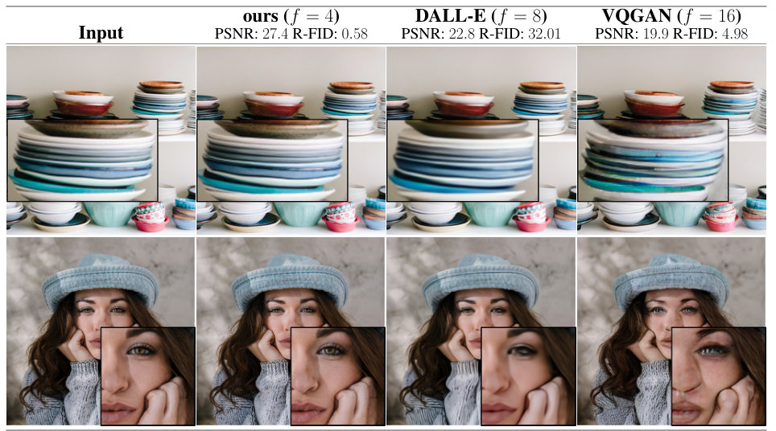
Image synthesis is one of the computer vision fields with the most spectacular recent development, but also among those with the greatest computational demands. Especially high-resolution synthesis of complex, natural scenes is presently dominated by scaling up likelihood-based models, potentially containing billions of parameters in autoregressive (AR) transformers [66, 67]. In contrast, the promising results of GANs [3, 27, 40] have been revealed to be mostly confined to data with comparably limited variability as their adversarial learning procedure does not easily scale to modeling complex, multi-modal distributions. Recently, diffusion models [82], which are built from a hierarchy of denoising autoencoders, have shown to achieve impressive results in image synthesis [30, 85] and beyond [7, 45, 48, 57], and define the state-of-the-art in class-conditional image synthesis [15, 31] and super-resolution [72]. Moreover, even unconditional DMs can readily be applied to tasks such as inpainting and colorization [85] or stroke-based synthesis [53], in contrast to other types of generative models [19, 46, 69]. Being likelihood-based models, they do not exhibit mode-collapse and training instabilities as GANs and, by heavily exploiting parameter sharing, they can model highly complex distributions of natural images without involving billions of parameters as in AR models [67].
图像合成是近年来计算机视觉中进展最惊人的方向之一，也是计算需求最大的方向之一。复杂自然场景的高分辨率合成，目前尤其依靠扩大基于似然的模型，其中自回归 (Autoregressive, AR) Transformer 可能包含数十亿参数 [66, 67]。相比之下，生成对抗网络 (GAN) [3, 27, 40] 的出色结果大多局限于变化相对有限的数据，因为对抗学习过程不容易扩展到复杂的多峰分布。最近，由一系列去噪自编码器构成的扩散模型 [82] 在图像合成 [30, 85] 和其他领域 [7, 45, 48, 57] 取得了令人印象深刻的结果，并成为类别条件图像合成 [15, 31] 和超分辨率 [72] 的当前最好方法。此外，与其他类型的生成模型 [19, 46, 69] 不同，即使是无条件扩散模型，也可以直接用于图像修复、上色 [85] 或基于笔画的合成 [53]。作为基于似然的模型，它们不像 GAN 那样存在模式崩溃和训练不稳定的问题；同时通过大量共享参数，不需要像自回归模型 [67] 那样动用数十亿参数，就能对自然图像的高度复杂分布建模。
DMs belong to the class of likelihood-based models, whose mode-covering behavior makes them prone to spend excessive amounts of capacity (and thus compute resources) on modeling imperceptible details of the data [16, 73]. Although the reweighted variational objective [30] aims to address this by undersampling the initial denoising steps, DMs are still computationally demanding, since training and evaluating such a model requires repeated function evaluations (and gradient computations) in the high-dimensional space of RGB images. As an example, training the most powerful DMs often takes hundreds of GPU days (e.g. 150 - 1000 V100 days in [15]) and repeated evaluations on a noisy version of the input space render also inference expensive, so that producing 50k samples takes approximately 5 days [15] on a single A100 GPU. This has two consequences for the research community and users in general: Firstly, training such a model requires massive computational resources only available to a small fraction of the field, and leaves a huge carbon footprint [65, 86]. Secondly, evaluating an already trained model is also expensive in time and memory, since the same model architecture must run sequentially for a large number of steps (e.g. 25 - 1000 steps in [15]).
扩散模型属于基于似然的模型。这类模型要覆盖所有模式，因此容易把过多的容量（也就是计算资源）花在数据中人眼察觉不到的细节上 [16, 73]。重新加权的变分目标 [30] 通过对最初几个去噪步降采样来缓解这一点，但扩散模型的计算需求仍然很大，因为训练和评估都要在高维的 RGB 图像空间中反复计算函数（和梯度）。例如，训练最强大的扩散模型常常要几百个 GPU 日（[15] 中为 150 至 1000 个 V100 日）；在输入空间的加噪版本上反复计算也使推理很昂贵，在单块 A100 GPU 上生成 5 万个样本大约要 5 天 [15]。这对研究界和一般用户有两个后果：第一，训练这样的模型需要大量计算资源，只有领域内很小一部分人负担得起，还会留下巨大的碳足迹 [65, 86]；第二，评估一个已训练好的模型在时间和内存上也很昂贵，因为同一个模型结构要依次运行很多步（[15] 中为 25 至 1000 步）。
To increase the accessibility of this powerful model class and at the same time reduce its significant resource consumption, a method is needed that reduces the computational complexity for both training and sampling. Reducing the computational demands of DMs without impairing their performance is, therefore, key to enhance their accessibility.
为了让更多人能用上这类强大的模型，同时降低它可观的资源消耗，需要一种同时降低训练和采样计算复杂度的方法。因此，在不损害性能的前提下降低扩散模型的计算需求，是提高其可及性的关键。
Our approach starts with the analysis of already trained diffusion models in pixel space: Fig. 2 shows the rate-distortion trade-off of a trained model. As with any likelihood-based model, learning can be roughly divided into two stages: First is a perceptual compression stage which removes high-frequency details but still learns little semantic variation. In the second stage, the actual generative model learns the semantic and conceptual composition of the data (semantic compression). We thus aim to first find a perceptually equivalent, but computationally more suitable space, in which we will train diffusion models for high-resolution image synthesis.
我们的方法从分析已训练好的像素空间扩散模型开始：图 2 显示了一个训练好的模型的率失真权衡。与所有基于似然的模型一样，学习大致可分为两个阶段：第一阶段是感知压缩 (Perceptual Compression)，去除高频细节，但几乎不学习语义变化；第二阶段，真正的生成模型学习数据的语义和概念构成（语义压缩，Semantic Compression）。因此，我们的目标是先找到一个在感知上等价、计算上更合适的空间，再在这个空间中训练扩散模型，用于高分辨率图像合成。
Following common practice [11, 23, 66, 67, 96], we separate training into two distinct phases: First, we train an autoencoder which provides a lower-dimensional (and thereby efficient) representational space which is perceptually equivalent to the data space. Importantly, and in contrast to previous work [23, 66], we do not need to rely on excessive spatial compression, as we train DMs in the learned latent space, which exhibits better scaling properties with respect to the spatial dimensionality. The reduced complexity also provides efficient image generation from the latent space with a single network pass. We dub the resulting model class Latent Diffusion Models (LDMs).
按照通常的做法 [11, 23, 66, 67, 96]，我们把训练分成两个明确的阶段：首先训练一个自编码器，它提供一个维度更低（因而更高效）、在感知上与数据空间等价的表示空间。重要的是，与以往工作 [23, 66] 不同，我们不需要依赖过度的空间压缩，因为我们在学到的隐空间中训练扩散模型，它在空间维度上的扩展性更好。复杂度降低后，从隐空间生成图像也很高效，只需要网络运行一次。我们把这类模型称为隐空间扩散模型 (Latent Diffusion Model, LDM)。
A notable advantage of this approach is that we need to train the universal autoencoding stage only once and can therefore reuse it for multiple DM trainings or to explore possibly completely different tasks [81]. This enables efficient exploration of a large number of diffusion models for various image-to-image and text-to-image tasks. For the latter, we design an architecture that connects transformers to the DM’s UNet backbone [71] and enables arbitrary types of token-based conditioning mechanisms, see Sec. 3.3.
这种方法的一个显著优点是，通用的自编码阶段只需训练一次，因此可以在多次扩散模型训练中复用，也可以用来探索可能完全不同的任务 [81]。这样就能高效地探索各种图像到图像、文本到图像任务的大量扩散模型。针对文本到图像，我们设计了一种结构，把 Transformer 接到扩散模型的 U-Net 主干 [71] 上，支持任意类型的基于 token 的条件机制，见第 3.3 节。
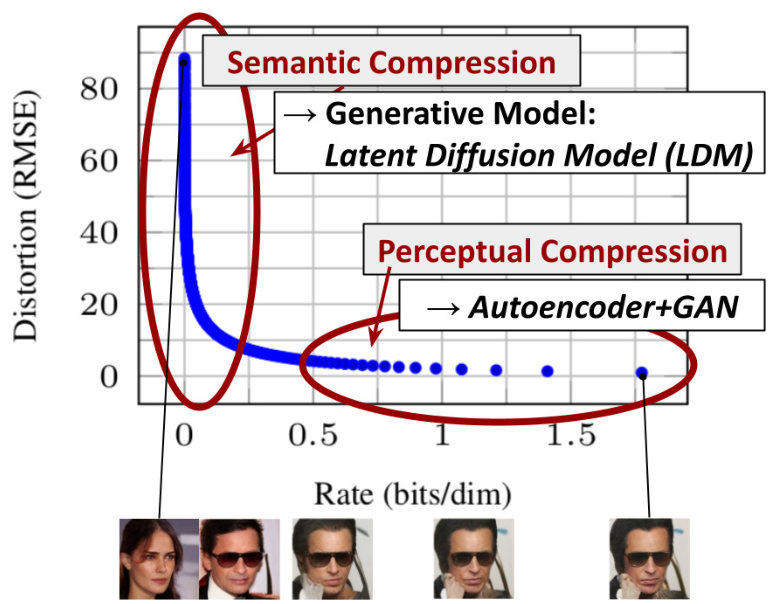
In sum, our work makes the following contributions:
总的来说，我们的工作有以下贡献：
(i) In contrast to purely transformer-based approaches [23, 66], our method scales more graceful to higher dimensional data and can thus (a) work on a compression level which provides more faithful and detailed reconstructions than previous work (see Fig. 1) and (b) can be efficiently applied to high-resolution synthesis of megapixel images.
(i) 与纯 Transformer 方法 [23, 66] 相比，我们的方法能更平稳地扩展到更高维的数据，因此 (a) 可以工作在比以往工作重建更忠实、细节更丰富的压缩水平上（见图 1），(b) 可以高效地用于百万像素图像的高分辨率合成。
(ii) We achieve competitive performance on multiple tasks (unconditional image synthesis, inpainting, stochastic super-resolution) and datasets while significantly lowering computational costs. Compared to pixel-based diffusion approaches, we also significantly decrease inference costs.
(ii) 我们在多种任务（无条件图像合成、图像修复、随机超分辨率）和数据集上取得了有竞争力的性能，同时大幅降低了计算成本。与像素空间的扩散方法相比，推理成本也大幅下降。
(iii) We show that, in contrast to previous work [93] which learns both an encoder/decoder architecture and a score-based prior simultaneously, our approach does not require a delicate weighting of reconstruction and generative abilities. This ensures extremely faithful reconstructions and requires very little regularization of the latent space.
(iii) 以往工作 [93] 同时学习编码器/解码器结构和基于分数的先验，而我们的方法不需要在重建能力和生成能力之间做精细的加权。这保证了极其忠实的重建，隐空间也只需要很少的正则化。
(iv) We find that for densely conditioned tasks such as super-resolution, inpainting and semantic synthesis, our model can be applied in a convolutional fashion and render large, consistent images of px.
(iv) 我们发现，对超分辨率、图像修复和语义合成这类条件密集的任务，模型可以以卷积方式运行，渲染出 像素的大尺寸一致图像。
(v) Moreover, we design a general-purpose conditioning mechanism based on cross-attention, enabling multi-modal training. We use it to train class-conditional, text-to-image and layout-to-image models.
(v) 此外，我们设计了一种基于交叉注意力的通用条件机制，支持多模态训练，并用它训练了类别条件、文本到图像和布局到图像模型。
(vi) Finally, we release pretrained latent diffusion and autoencoding models at https://github.com/CompVis/latent-diffusion which might be reusable for a various tasks besides training of DMs [81].
(vi) 最后，我们在 https://github.com/CompVis/latent-diffusion 发布了预训练的隐空间扩散模型和自编码模型，它们除了训练扩散模型，还可能复用于其他多种任务 [81]。
Generative Models for Image Synthesis The high dimensional nature of images presents distinct challenges to generative modeling. Generative Adversarial Networks (GAN) [27] allow for efficient sampling of high resolution images with good perceptual quality [3, 42], but are difficult to optimize [2, 28, 54] and struggle to capture the full data distribution [55]. In contrast, likelihood-based methods emphasize good density estimation which renders optimization more well-behaved. Variational autoencoders (VAE) [46] and flow-based models [18, 19] enable efficient synthesis of high resolution images [9, 44, 92], but sample quality is not on par with GANs. While autoregressive models (ARM) [6, 10, 94, 95] achieve strong performance in density estimation, computationally demanding architectures [97] and a sequential sampling process limit them to low resolution images. Because pixel based representations of images contain barely perceptible, high-frequency details [16, 73], maximum-likelihood training spends a disproportionate amount of capacity on modeling them, resulting in long training times. To scale to higher resolutions, several two-stage approaches [23, 67, 101, 103] use ARMs to model a compressed latent image space instead of raw pixels.
图像合成的生成模型 图像的高维特性给生成建模带来了特有的挑战。生成对抗网络 (GAN) [27] 可以高效采样感知质量很好的高分辨率图像 [3, 42]，但难以优化 [2, 28, 54]，也难以覆盖完整的数据分布 [55]。相比之下，基于似然的方法重视好的密度估计，优化的表现更稳定。变分自编码器 (VAE) [46] 和流模型 [18, 19] 可以高效合成高分辨率图像 [9, 44, 92]，但样本质量不及 GAN。自回归模型 (Autoregressive Model, ARM) [6, 10, 94, 95] 在密度估计上表现很强，但计算量巨大的结构 [97] 和顺序采样过程把它们限制在低分辨率图像上。由于图像的像素表示包含几乎察觉不到的高频细节 [16, 73]，最大似然训练把过多的容量花在对它们建模上，导致训练时间很长。为了扩展到更高分辨率，一些两阶段方法 [23, 67, 101, 103] 用自回归模型对压缩后的隐图像空间建模，而不直接对原始像素建模。
Recently, Diffusion Probabilistic Models (DM) [82], have achieved state-of-the-art results in density estimation [45] as well as in sample quality [15]. The generative power of these models stems from a natural fit to the inductive biases of image-like data when their underlying neural backbone is implemented as a UNet [15, 30, 71, 85]. The best synthesis quality is usually achieved when a reweighted objective [30] is used for training. In this case, the DM corresponds to a lossy compressor and allow to trade image quality for compression capabilities. Evaluating and optimizing these models in pixel space, however, has the downside of low inference speed and very high training costs. While the former can be partially adressed by advanced sampling strategies [47, 75, 84] and hierarchical approaches [31, 93], training on high-resolution image data always requires to calculate expensive gradients. We adress both drawbacks with our proposed LDMs, which work on a compressed latent space of lower dimensionality. This renders training computationally cheaper and speeds up inference with almost no reduction in synthesis quality (see Fig. 1).
最近，扩散概率模型 (DM) [82] 在密度估计 [45] 和样本质量 [15] 上都取得了当前最好的结果。这类模型的生成能力来自神经主干用 U-Net [15, 30, 71, 85] 实现时，与类图像数据的归纳偏置天然契合。最好的合成质量通常在用重新加权的目标 [30] 训练时取得。这种情况下，扩散模型相当于一个有损压缩器，可以用图像质量换取压缩能力。但在像素空间评估和优化这些模型，缺点是推理慢、训练成本很高。前者可以用高级采样策略 [47, 75, 84] 和层级方法 [31, 93] 部分缓解，但在高分辨率图像数据上训练始终要计算昂贵的梯度。我们提出的 LDM 工作在维度更低的压缩隐空间中，同时解决这两个缺点。这使训练的计算更便宜，推理更快，而合成质量几乎不下降（见图 1）。
Two-Stage Image Synthesis To mitigate the shortcomings of individual generative approaches, a lot of research [11, 23, 67, 70, 101, 103] has gone into combining the strengths of different methods into more efficient and performant models via a two stage approach. VQ-VAEs [67, 101] use autoregressive models to learn an expressive prior over a discretized latent space. [66] extend this approach to text-to-image generation by learning a joint distributation over discretized image and text representations. More generally, [70] uses conditionally invertible networks to provide a generic transfer between latent spaces of diverse domains. Different from VQ-VAEs, VQGANs [23, 103] employ a first stage with an adversarial and perceptual objective to scale autoregressive transformers to larger images. However, the high compression rates required for feasible ARM training, which introduces billions of trainable parameters [23, 66], limit the overall performance of such approaches and less compression comes at the price of high computational cost [23, 66]. Our work prevents such trade-offs, as our proposed LDMs scale more gently to higher dimensional latent spaces due to their convolutional backbone. Thus, we are free to choose the level of compression which optimally mediates between learning a powerful first stage, without leaving too much perceptual compression up to the generative diffusion model while guaranteeing high-fidelity reconstructions (see Fig. 1).
两阶段图像合成 为了弥补单一生成方法的不足，大量研究 [11, 23, 67, 70, 101, 103] 通过两阶段方法结合不同方法的长处，得到更高效、性能更好的模型。VQ-VAE [67, 101] 用自回归模型在离散化的隐空间上学习表达力强的先验。[66] 把这一方法扩展到文本生成图像，学习离散化图像表示和文本表示的联合分布。更一般地，[70] 用条件可逆网络在不同领域的隐空间之间提供通用的转换。与 VQ-VAE 不同，VQGAN [23, 103] 的第一阶段采用对抗目标和感知目标，把自回归 Transformer 扩展到更大的图像。但要让自回归模型训练可行，需要很高的压缩率，这带来数十亿可训练参数 [23, 66]，限制了这类方法的整体性能；而压缩得少，又要付出很高的计算成本 [23, 66]。我们的工作避开了这种取舍，因为卷积主干使 LDM 能更平缓地扩展到更高维的隐空间。因此，我们可以自由选择压缩水平，在学习一个强大的第一阶段和不把太多感知压缩留给生成式扩散模型之间取得最佳折中，同时保证高保真的重建（见图 1）。
While approaches to jointly [93] or separately [80] learn an encoding/decoding model together with a score-based prior exist, the former still require a difficult weighting between reconstruction and generative capabilities [11] and are outperformed by our approach (Sec. 4), and the latter focus on highly structured images such as human faces.
已有方法联合 [93] 或分开 [80] 学习编码/解码模型和基于分数的先验，但前者仍需要在重建能力和生成能力之间做困难的加权 [11]，并且性能不及我们的方法（第 4 节），后者则集中在人脸这类结构高度规整的图像上。
To lower the computational demands of training diffusion models towards high-resolution image synthesis, we observe that although diffusion models allow to ignore perceptually irrelevant details by undersampling the corresponding loss terms [30], they still require costly function evaluations in pixel space, which causes huge demands in computation time and energy resources.
为了降低面向高分辨率图像合成的扩散模型训练的计算需求，我们注意到：扩散模型虽然可以通过对相应损失项降采样来忽略感知上无关的细节 [30]，但仍要在像素空间中做昂贵的函数计算，这造成了对计算时间和能源的巨大需求。
We propose to circumvent this drawback by introducing an explicit separation of the compressive from the generative learning phase (see Fig. 2). To achieve this, we utilize an autoencoding model which learns a space that is perceptually equivalent to the image space, but offers significantly reduced computational complexity.
我们提出明确分离压缩学习阶段和生成学习阶段来绕开这个缺点（见图 2）。为此，我们使用一个自编码模型，它学习一个在感知上与图像空间等价、计算复杂度却大幅降低的空间。
Such an approach offers several advantages: (i) By leaving the high-dimensional image space, we obtain DMs which are computationally much more efficient because sampling is performed on a low-dimensional space. (ii) We exploit the inductive bias of DMs inherited from their UNet architecture [71], which makes them particularly effective for data with spatial structure and therefore alleviates the need for aggressive, quality-reducing compression levels as required by previous approaches [23, 66]. (iii) Finally, we obtain general-purpose compression models whose latent space can be used to train multiple generative models and which can also be utilized for other downstream applications such as single-image CLIP-guided synthesis [25].
这种方法有几个优点：(i) 离开高维图像空间后，采样在低维空间中进行，扩散模型的计算效率高得多。(ii) 我们利用扩散模型从 U-Net 结构 [71] 继承的归纳偏置，它使模型对有空间结构的数据特别有效，因此不再需要以往方法 [23, 66] 那种激进的、损害质量的压缩水平。(iii) 最后，我们得到通用的压缩模型，其隐空间可以用于训练多个生成模型，也可以用于其他下游应用，比如单图 CLIP 引导合成 [25]。
Our perceptual compression model is based on previous work [23] and consists of an autoencoder trained by combination of a perceptual loss [106] and a patch-based [33] adversarial objective [20, 23, 103]. This ensures that the reconstructions are confined to the image manifold by enforcing local realism and avoids bluriness introduced by relying solely on pixel-space losses such as or objectives.
我们的感知压缩模型基于以往工作 [23]，是一个用感知损失 [106] 和基于图块 [33] 的对抗目标 [20, 23, 103] 组合训练的自编码器。这保证重建结果通过局部真实感被约束在图像流形上，避免了只用 或 这类像素空间损失带来的模糊。
More precisely, given an image in RGB space, the encoder encodes into a latent representation , and the decoder reconstructs the image from the latent, giving , where . Importantly, the encoder downsamples the image by a factor , and we investigate different downsampling factors , with .
更确切地说，给定 RGB 空间中的图像 ，编码器 把 编码成隐表示 ，解码器 从隐表示重建图像，得到 ，其中 。重要的是，编码器把图像下采样 倍；我们考察不同的下采样倍数 ，其中 。
In order to avoid arbitrarily high-variance latent spaces, we experiment with two different kinds of regularizations. The first variant, KL-reg., imposes a slight KL-penalty towards a standard normal on the learned latent, similar to a VAE [46, 69], whereas VQ-reg. uses a vector quantization layer [96] within the decoder. This model can be interpreted as a VQGAN [23] but with the quantization layer absorbed by the decoder. Because our subsequent DM is designed to work with the two-dimensional structure of our learned latent space , we can use relatively mild compression rates and achieve very good reconstructions. This is in contrast to previous works [23, 66], which relied on an arbitrary 1D ordering of the learned space to model its distribution autoregressively and thereby ignored much of the inherent structure of . Hence, our compression model preserves details of better (see Tab. 8). The full objective and training details can be found in the supplement.
为了避免隐空间的方差过大，我们试验了两种正则化。第一种称为 KL 正则化 (KL-reg.)，对学到的隐变量施加一个轻微的、指向标准正态分布的 KL 惩罚，类似 VAE [46, 69]；第二种称为 VQ 正则化 (VQ-reg.)，在解码器中使用一个向量量化层 [96]。这个模型可以理解为量化层被解码器吸收了的 VQGAN [23]。由于后面的扩散模型按学到的隐空间 的二维结构设计，我们可以用比较温和的压缩率，得到很好的重建。以往工作 [23, 66] 则依赖学到的空间 的某个任意一维排序来对其分布做自回归建模，因而忽略了 的大部分固有结构。因此，我们的压缩模型更好地保留了 的细节（见表 8）。完整的目标和训练细节见补充材料。
Diffusion Models [82] are probabilistic models designed to learn a data distribution by gradually denoising a normally distributed variable, which corresponds to learning the reverse process of a fixed Markov Chain of length . For image synthesis, the most successful models [15, 30, 72] rely on a reweighted variant of the variational lower bound on , which mirrors denoising score-matching [85]. These models can be interpreted as an equally weighted sequence of denoising autoencoders , which are trained to predict a denoised variant of their input , where is a noisy version of the input . The corresponding objective can be simplified to (Sec. B)
扩散模型 [82] 是一类概率模型，它通过逐步对正态分布的变量去噪来学习数据分布 ，这相当于学习一条长度为 的固定马尔可夫链的逆向过程。在图像合成上，最成功的模型 [15, 30, 72] 依赖 变分下界的一个重新加权变体，它与去噪分数匹配 [85] 相对应。这些模型可以理解为一串权重相等的去噪自编码器 ，它们被训练来预测输入 的去噪版本，其中 是输入 的加噪版本。相应的目标可以简化为（附录 B）
| (1) |
with uniformly sampled from .
其中 从 中均匀采样。
Generative Modeling of Latent Representations With our trained perceptual compression models consisting of and , we now have access to an efficient, low-dimensional latent space in which high-frequency, imperceptible details are abstracted away. Compared to the high-dimensional pixel space, this space is more suitable for likelihood-based generative models, as they can now (i) focus on the important, semantic bits of the data and (ii) train in a lower dimensional, computationally much more efficient space.
隐表示的生成建模 有了训练好的、由 和 组成的感知压缩模型，我们就得到一个高效的低维隐空间，其中高频的、察觉不到的细节已被抽象掉。与高维像素空间相比，这个空间更适合基于似然的生成模型，因为它们现在可以 (i) 专注于数据中重要的语义比特，(ii) 在维度更低、计算效率高得多的空间中训练。
Unlike previous work that relied on autoregressive, attention-based transformer models in a highly compressed, discrete latent space [23, 66, 103], we can take advantage of image-specific inductive biases that our model offers. This includes the ability to build the underlying UNet primarily from 2D convolutional layers, and further focusing the objective on the perceptually most relevant bits using the reweighted bound, which now reads
以往工作依赖高度压缩的离散隐空间中基于注意力的自回归 Transformer 模型 [23, 66, 103]，我们则可以利用模型提供的图像专用归纳偏置。这包括主要用二维卷积层构建底层 U-Net，并用重新加权的下界进一步把目标集中在感知上最相关的比特上，目标现在写为
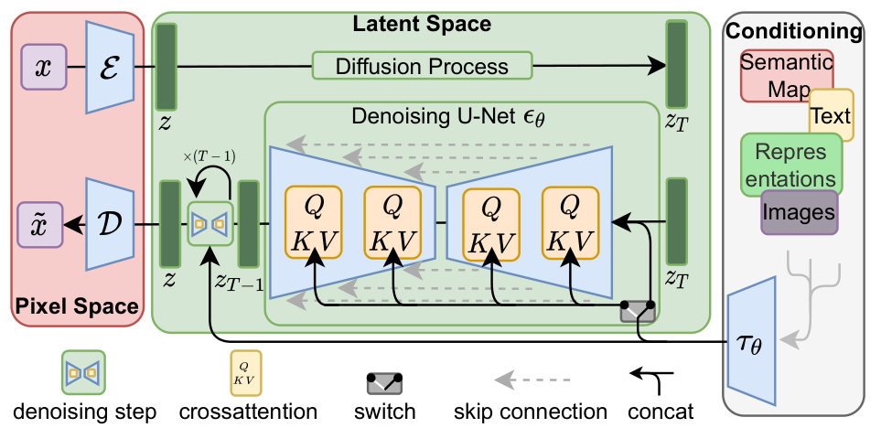
| (2) |
The neural backbone of our model is realized as a time-conditional UNet [71]. Since the forward process is fixed, can be efficiently obtained from during training, and samples from can be decoded to image space with a single pass through .
模型的神经主干 用一个带时间条件的 U-Net [71] 实现。由于前向过程是固定的，训练时可以从 高效地得到 ，而来自 的样本只需经过 一次就能解码到图像空间。
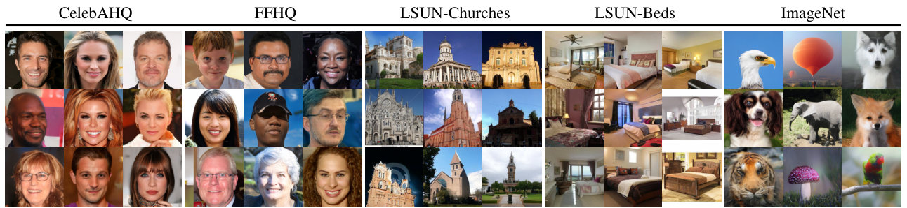
Similar to other types of generative models [56, 83], diffusion models are in principle capable of modeling conditional distributions of the form . This can be implemented with a conditional denoising autoencoder and paves the way to controlling the synthesis process through inputs such as text [68], semantic maps [33, 61] or other image-to-image translation tasks [34].
与其他类型的生成模型 [56, 83] 类似，扩散模型原则上能够对形如 的条件分布建模。这可以用条件去噪自编码器 实现，从而可以通过文本 [68]、语义图 [33, 61] 或其他图像到图像转换任务 [34] 这类输入 控制合成过程。
In the context of image synthesis, however, combining the generative power of DMs with other types of conditionings beyond class-labels [15] or blurred variants of the input image [72] is so far an under-explored area of research.
不过在图像合成中，把扩散模型的生成能力与类别标签 [15] 或输入图像的模糊版本 [72] 之外的其他条件结合起来，至今还是一个研究不足的方向。
We turn DMs into more flexible conditional image generators by augmenting their underlying UNet backbone with the cross-attention mechanism [97], which is effective for learning attention-based models of various input modalities [35, 36]. To pre-process from various modalities (such as language prompts) we introduce a domain specific encoder that projects to an intermediate representation , which is then mapped to the intermediate layers of the UNet via a cross-attention layer implementing , with
我们给 U-Net 主干加上交叉注意力机制 [97]，把扩散模型变成更灵活的条件图像生成器。这种机制能有效学习多种输入模态上的注意力模型 [35, 36]。为了预处理来自各种模态（比如语言提示）的 ，我们引入一个领域专用的编码器 ，把 投影成中间表示 ，再通过一个实现 的交叉注意力层映射到 U-Net 的中间层，其中
Here, denotes a (flattened) intermediate representation of the UNet implementing and , & are learnable projection matrices [36, 97]. See Fig. 3 for a visual depiction.
Based on image-conditioning pairs, we then learn the conditional LDM via
基于图像和条件的配对，我们通过下式学习条件 LDM：
| (3) |
where both and are jointly optimized via Eq. 3. This conditioning mechanism is flexible as can be parameterized with domain-specific experts, e.g. (unmasked) transformers [97] when are text prompts (see Sec. 4.3.1)
其中 和 通过式 (3) 联合优化。这种条件机制很灵活，因为 可以用领域专用的模型参数化，比如当 是文本提示时用（无掩码的）Transformer [97]（见第 4.3.1 节）。
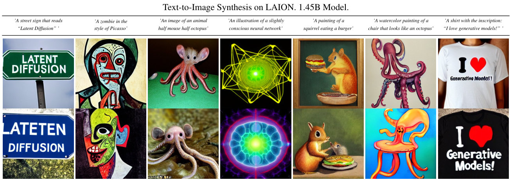
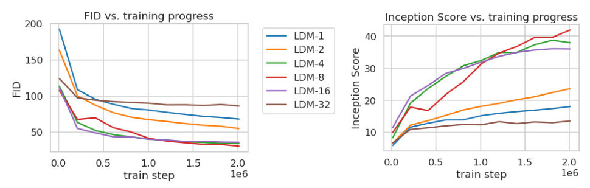
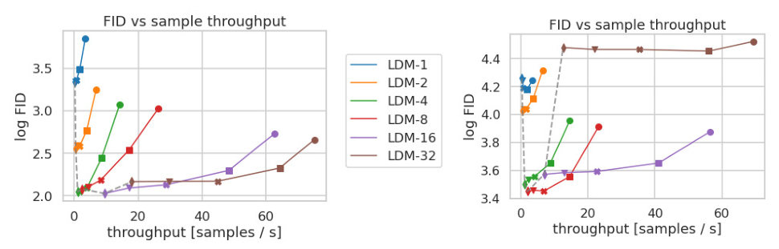
LDMs provide means to flexible and computationally tractable diffusion based image synthesis of various image modalities, which we empirically show in the following. Firstly, however, we analyze the gains of our models compared to pixel-based diffusion models in both training and inference. Interestingly, we find that LDMs trained in VQ-regularized latent spaces sometimes achieve better sample quality, even though the reconstruction capabilities of VQ-regularized first stage models slightly fall behind those of their continuous counterparts, cf. Tab. 8. A visual comparison between the effects of first stage regularization schemes on LDM training and their generalization abilities to resolutions can be found in Appendix D.1. In E.2 we list details on architecture, implementation, training and evaluation for all results presented in this section.
LDM 为各种图像模态提供了灵活且计算上可行的扩散式图像合成方法，下面用实验说明。首先分析我们的模型相对像素空间扩散模型在训练和推理上的收益。值得一提的是，我们发现在 VQ 正则化隐空间中训练的 LDM 有时样本质量更好，尽管 VQ 正则化的第一阶段模型的重建能力略逊于连续版本，参见表 8。第一阶段正则化方式对 LDM 训练及其向 分辨率的泛化能力的影响，视觉比较见附录 D.1。本节所有结果的结构、实现、训练和评估细节列在附录 E.2。
This section analyzes the behavior of our LDMs with different downsampling factors (abbreviated as LDM-, where LDM-1 corresponds to pixel-based DMs). To obtain a comparable test-field, we fix the computational resources to a single NVIDIA A100 for all experiments in this section and train all models for the same number of steps and with the same number of parameters.
本节分析不同下采样倍数 （简写为 LDM-，其中 LDM-1 对应像素空间的扩散模型）下 LDM 的表现。为了提供可比的条件，本节所有实验都固定计算资源为单块 NVIDIA A100，所有模型训练相同的步数，参数量也相同。
Tab. 8 shows hyperparameters and reconstruction performance of the first stage models used for the LDMs compared in this section. Fig. 6 shows sample quality as a function of training progress for 2M steps of class-conditional models on the ImageNet [12] dataset. We see that, i) small downsampling factors for LDM-1,2 result in slow training progress, whereas ii) overly large values of cause stagnating fidelity after comparably few training steps. Revisiting the analysis above (Fig. 1 and 2) we attribute this to i) leaving most of perceptual compression to the diffusion model and ii) too strong first stage compression resulting in information loss and thus limiting the achievable quality. LDM-4-16 strike a good balance between efficiency and perceptually faithful results, which manifests in a significant FID [29] gap of 38 between pixel-based diffusion (LDM-1) and LDM-8 after 2M training steps.
表 8 给出本节比较的 LDM 所用第一阶段模型的超参数和重建性能。图 6 显示类别条件模型在 ImageNet [12] 数据集上训练 200 万步时，样本质量随训练进度的变化。可以看到：i) LDM-1,2 这样小的下采样倍数训练进展缓慢；ii) 过大的 则使保真度在相对较少的训练步数后就停滞。回顾前面的分析（图 1 和图 2），我们认为原因分别是：i) 把大部分感知压缩留给了扩散模型；ii) 第一阶段压缩过强造成信息损失，限制了可达质量。LDM-4-16 在效率和感知保真之间取得了很好的平衡，训练 200 万步后，像素空间扩散模型 (LDM-1) 与 LDM-8 之间的 FID [29] 差距达到 38。
In Fig. 7, we compare models trained on CelebA-HQ [39] and ImageNet in terms sampling speed for different numbers of denoising steps with the DDIM sampler [84] and plot it against FID-scores [29]. LDM-4-8 outperform models with unsuitable ratios of perceptual and conceptual compression. Especially compared to pixel-based LDM-1, they achieve much lower FID scores while simultaneously significantly increasing sample throughput. Complex datasets such as ImageNet require reduced compression rates to avoid reducing quality. In summary, LDM-4 and -8 offer the best conditions for achieving high-quality synthesis results.
在图 7 中，我们比较在 CelebA-HQ [39] 和 ImageNet 上训练的模型，用 DDIM 采样器 [84] 取不同去噪步数时的采样速度，并对照 FID [29] 作图。LDM-4-8 优于感知压缩和概念压缩比例不合适的模型。尤其与像素空间的 LDM-1 相比，它们的 FID 低得多，同时样本吞吐量大幅提高。ImageNet 这样复杂的数据集需要降低压缩率，以免损失质量。总之，LDM-4 和 LDM-8 为高质量合成提供了最好的条件。
| CelebA-HQ | FFHQ | |||||||
|---|---|---|---|---|---|---|---|---|
| Method | FID | Prec. | Recall | Method | FID | Prec. | Recall | |
| DC-VAE [63] | 15.8 | - | - | ImageBART [21] | 9.57 | - | - | |
| VQGAN+T. [23] (k=400) | 10.2 | - | - | U-Net GAN (+aug) [77] | 10.9 (7.6) | - | - | |
| PGGAN [39] | 8.0 | - | - | UDM [43] | 5.54 | - | - | |
| LSGM [93] | 7.22 | - | - | StyleGAN [41] | 4.16 | 0.71 | 0.46 | |
| UDM [43] | 7.16 | - | - | ProjectedGAN[76] | 3.08 | 0.65 | 0.46 | |
| LDM-4 (ours, 500-s†) | 5.11 | 0.72 | 0.49 | LDM-4 (ours, 200-s) | 4.98 | 0.73 | 0.50 | |
| LSUN-Churches | LSUN-Bedrooms | |||||||
|---|---|---|---|---|---|---|---|---|
| Method | FID | Prec. | Recall | Method | FID | Prec. | Recall | |
| DDPM [30] | 7.89 | - | - | ImageBART [21] | 5.51 | - | - | |
| ImageBART[21] | 7.32 | - | - | DDPM [30] | 4.9 | - | - | |
| PGGAN [39] | 6.42 | - | - | UDM [43] | 4.57 | - | - | |
| StyleGAN[41] | 4.21 | - | - | StyleGAN[41] | 2.35 | 0.59 | 0.48 | |
| StyleGAN2[42] | 3.86 | - | - | ADM [15] | 1.90 | 0.66 | 0.51 | |
| ProjectedGAN[76] | 1.59 | 0.61 | 0.44 | ProjectedGAN[76] | 1.52 | 0.61 | 0.34 | |
| LDM-8∗ (ours, 200-s) | 4.02 | 0.64 | 0.52 | LDM-4 (ours, 200-s) | 2.95 | 0.66 | 0.48 | |
| Text-Conditional Image Synthesis | ||||
|---|---|---|---|---|
| Method | FID | IS | ||
| CogView† [17] | 27.10 | 18.20 | 4B | self-ranking, rejection rate 0.017 |
| LAFITE† [109] | 26.94 | 26.02 | 75M | |
| GLIDE∗ [59] | 12.24 | - | 6B | 277 DDIM steps, c.f.g. [32] |
| Make-A-Scene∗ [26] | 11.84 | - | 4B | c.f.g for AR models [98] |
| LDM-KL-8 | 23.31 | 20.03 | 1.45B | 250 DDIM steps |
| LDM-KL-8-G∗ | 12.63 | 30.29 | 1.45B | 250 DDIM steps, c.f.g. [32] |
We train unconditional models of images on CelebA-HQ [39], FFHQ [41], LSUN-Churches and -Bedrooms [102] and evaluate the i) sample quality and ii) their coverage of the data manifold using ii) FID [29] and ii) Precision-and-Recall [50]. Tab. 1 summarizes our results. On CelebA-HQ, we report a new state-of-the-art FID of , outperforming previous likelihood-based models as well as GANs. We also outperform LSGM [93] where a latent diffusion model is trained jointly together with the first stage. In contrast, we train diffusion models in a fixed space and avoid the difficulty of weighing reconstruction quality against learning the prior over the latent space, see Fig. 1-2.
我们在 CelebA-HQ [39]、FFHQ [41]、LSUN-Churches 和 LSUN-Bedrooms [102] 上训练 图像的无条件模型，用 FID [29] 评估 i) 样本质量，用 Precision-and-Recall [50] 评估 ii) 对数据流形的覆盖。表 1 汇总了结果。在 CelebA-HQ 上，我们报告了新的最好 FID ，优于以往基于似然的模型和 GAN。我们也优于 LSGM [93]，它把隐空间扩散模型和第一阶段联合训练。我们则在一个固定的空间中训练扩散模型，避开了在重建质量和学习隐空间先验之间权衡的困难，见图 1、图 2。
We outperform prior diffusion based approaches on all but the LSUN-Bedrooms dataset, where our score is close to ADM [15], despite utilizing half its parameters and requiring 4-times less train resources (see Appendix E.3.5). Moreover, LDMs consistently improve upon GAN-based methods in Precision and Recall, thus confirming the advantages of their mode-covering likelihood-based training objective over adversarial approaches. In Fig. 4 we also show qualitative results on each dataset.
除 LSUN-Bedrooms 外，我们在所有数据集上都优于以往的扩散方法；在 LSUN-Bedrooms 上，我们的分数接近 ADM [15]，但只用了它一半的参数，训练资源也只有它的四分之一（见附录 E.3.5）。此外，LDM 在 Precision 和 Recall 上一直优于基于 GAN 的方法，这证实了覆盖模式的基于似然的训练目标相对对抗方法的优势。图 4 还给出了每个数据集上的定性结果。
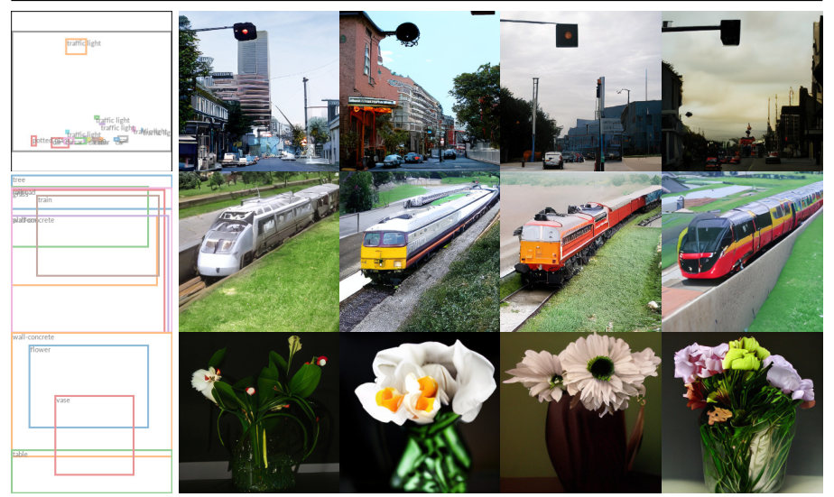
By introducing cross-attention based conditioning into LDMs we open them up for various conditioning modalities previously unexplored for diffusion models. For text-to-image image modeling, we train a 1.45B parameter KL-regularized LDM conditioned on language prompts on LAION-400M [78]. We employ the BERT-tokenizer [14] and implement as a transformer [97] to infer a latent code which is mapped into the UNet via (multi-head) cross-attention (Sec. 3.3). This combination of domain specific experts for learning a language representation and visual synthesis results in a powerful model, which generalizes well to complex, user-defined text prompts, cf. Fig. 8 and 5. For quantitative analysis, we follow prior work and evaluate text-to-image generation on the MS-COCO [51] validation set, where our model improves upon powerful AR [17, 66] and GAN-based [109] methods, cf. Tab. 2. We note that applying classifier-free diffusion guidance [32] greatly boosts sample quality, such that the guided LDM-KL-8-G is on par with the recent state-of-the-art AR [26] and diffusion models [59] for text-to-image synthesis, while substantially reducing parameter count. To further analyze the flexibility of the cross-attention based conditioning mechanism we also train models to synthesize images based on semantic layouts on OpenImages [49], and finetune on COCO [4], see Fig. 8. See Sec. D.3 for the quantitative evaluation and implementation details.
在 LDM 中引入基于交叉注意力的条件，使它能接受此前扩散模型没有探索过的多种条件模态。对文本生成图像，我们在 LAION-400M [78] 上训练了一个以语言提示为条件、14.5 亿参数的 KL 正则化 LDM。我们使用 BERT 分词器 [14]，把 实现为 Transformer [97]，由它推断出一个隐编码，再通过（多头）交叉注意力映射到 U-Net 中（第 3.3 节）。把学习语言表示的领域专用模型和视觉合成结合起来，得到一个强大的模型，能很好地泛化到复杂的用户自定义文本提示，见图 8 和图 5。定量分析方面，我们按以往工作的做法在 MS-COCO [51] 验证集上评估文本生成图像，结果优于强大的自回归方法 [17, 66] 和基于 GAN 的方法 [109]，见表 2。我们注意到，无分类器扩散引导 (Classifier-Free Guidance) [32] 大幅提升了样本质量，使带引导的 LDM-KL-8-G 与最新的自回归方法 [26] 和扩散模型 [59] 在文本生成图像上水平相当，参数量却大幅减少。为了进一步分析基于交叉注意力的条件机制的灵活性，我们还在 OpenImages [49] 上训练了根据语义布局合成图像的模型，并在 COCO [4] 上微调，见图 8。定量评估和实现细节见附录 D.3。
Lastly, following prior work [3, 15, 21, 23], we evaluate our best-performing class-conditional ImageNet models with from Sec. 4.1 in Tab. 3, Fig. 4 and Sec. D.4. Here we outperform the state of the art diffusion model ADM [15] while significantly reducing computational requirements and parameter count, cf. Tab 18.
最后，按以往工作 [3, 15, 21, 23] 的做法，我们在表 3、图 4 和附录 D.4 中评估第 4.1 节中表现最好的 类别条件 ImageNet 模型。这里我们优于当前最好的扩散模型 ADM [15]，同时大幅减少了计算需求和参数量，见表 18。
| Method | FID | IS | Precision | Recall | ||
|---|---|---|---|---|---|---|
| BigGan-deep [3] | 6.95 | 203.6 | 0.87 | 0.28 | 340M | - |
| ADM [15] | 10.94 | 100.98 | 0.69 | 0.63 | 554M | 250 DDIM steps |
| ADM-G [15] | 4.59 | 186.7 | 0.82 | 0.52 | 608M | 250 DDIM steps |
| LDM-4 (ours) | 10.56 | 103.49 | 0.71 | 0.62 | 400M | 250 DDIM steps |
| LDM-4-G (ours) | 3.60 | 247.67 | 0.87 | 0.48 | 400M | 250 steps, c.f.g [32], |
By concatenating spatially aligned conditioning information to the input of , LDMs can serve as efficient general-purpose image-to-image translation models. We use this to train models for semantic synthesis, super-resolution (Sec. 4.4) and inpainting (Sec. 4.5). For semantic synthesis, we use images of landscapes paired with semantic maps [23, 61] and concatenate downsampled versions of the semantic maps with the latent image representation of a model (VQ-reg., see Tab. 8). We train on an input resolution of (crops from ) but find that our model generalizes to larger resolutions and can generate images up to the megapixel regime when evaluated in a convolutional manner (see Fig. 9). We exploit this behavior to also apply the super-resolution models in Sec. 4.4 and the inpainting models in Sec. 4.5 to generate large images between and . For this application, the signal-to-noise ratio (induced by the scale of the latent space) significantly affects the results. In Sec. D.1 we illustrate this when learning an LDM on (i) the latent space as provided by a model (KL-reg., see Tab. 8), and (ii) a rescaled version, scaled by the component-wise standard deviation.
把空间上对齐的条件信息拼接到 的输入上，LDM 可以作为高效的通用图像到图像转换模型。我们用这种方式训练语义合成、超分辨率（第 4.4 节）和图像修复（第 4.5 节）模型。对语义合成，我们使用与语义图配对的风景图像 [23, 61]，把语义图的下采样版本与一个 模型（VQ 正则化，见表 8）的隐图像表示拼接。训练时输入分辨率为 （从 裁剪），但我们发现，以卷积方式运行时，模型能泛化到更大的分辨率，生成百万像素量级的图像（见图 9）。我们也利用这一性质，让第 4.4 节的超分辨率模型和第 4.5 节的图像修复模型生成 到 之间的大图。在这种应用中，（由隐空间的尺度决定的）信噪比对结果影响很大。附录 D.1 说明了这一点，比较了在 (i) 一个 模型（KL 正则化，见表 8）提供的隐空间上，和 (ii) 按各分量标准差缩放后的版本上学习 LDM 的结果。
The latter, in combination with classifier-free guidance [32], also enables the direct synthesis of images for the text-conditional LDM-KL-8-G as in Fig. 13.
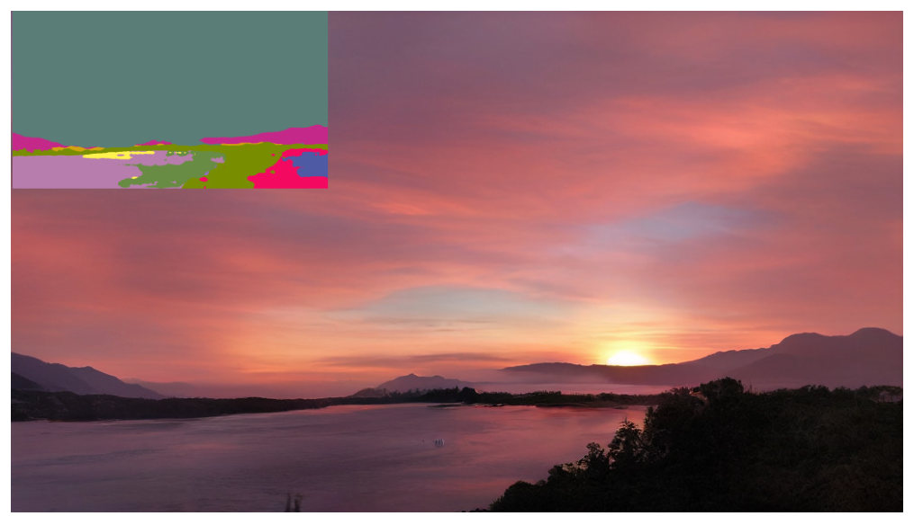
LDMs can be efficiently trained for super-resolution by diretly conditioning on low-resolution images via concatenation (cf. Sec. 3.3). In a first experiment, we follow SR3 [72] and fix the image degradation to a bicubic interpolation with -downsampling and train on ImageNet following SR3’s data processing pipeline. We use the autoencoding model pretrained on OpenImages (VQ-reg., cf. Tab. 8) and concatenate the low-resolution conditioning and the inputs to the UNet, i.e. is the identity. Our qualitative and quantitative results (see Fig. 10 and Tab. 5) show competitive performance and LDM-SR outperforms SR3 in FID while SR3 has a better IS. A simple image regression model achieves the highest PSNR and SSIM scores; however these metrics do not align well with human perception [106] and favor blurriness over imperfectly aligned high frequency details [72]. Further, we conduct a user study comparing the pixel-baseline with LDM-SR. We follow SR3 [72] where human subjects were shown a low-res image in between two high-res images and asked for preference. The results in Tab. 4 affirm the good performance of LDM-SR. PSNR and SSIM can be pushed by using a post-hoc guiding mechanism [15] and we implement this image-based guider via a perceptual loss, see Sec. D.6.
LDM 可以通过拼接直接以低分辨率图像为条件，高效地训练超分辨率（参见第 3.3 节）。在第一个实验中，我们按 SR3 [72] 的做法，把图像退化固定为 下采样的双三次插值，并按 SR3 的数据处理流程在 ImageNet 上训练。我们使用在 OpenImages 上预训练的 自编码模型（VQ 正则化，参见表 8），把低分辨率条件 与 U-Net 的输入拼接，也就是说 是恒等映射。定性和定量结果（见图 10 和表 5）显示出有竞争力的性能，LDM-SR 的 FID 优于 SR3，而 SR3 的 IS 更好。一个简单的图像回归模型取得了最高的 PSNR 和 SSIM，但这些指标与人类感知不太吻合 [106]，它们偏好模糊，而不是没有完全对齐的高频细节 [72]。此外，我们做了一项用户研究，比较像素基线和 LDM-SR。我们按 SR3 [72] 的做法，向受试者展示夹在两张高分辨率图像中间的一张低分辨率图像，询问他们更喜欢哪一张。表 4 的结果证实了 LDM-SR 的良好性能。PSNR 和 SSIM 可以用事后引导机制 [15] 提高，我们通过感知损失实现了这种基于图像的引导器，见附录 D.6。
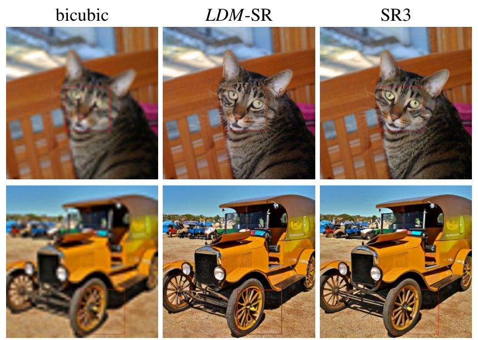
| SR on ImageNet | Inpainting on Places | ||||
|---|---|---|---|---|---|
| User Study | Pixel-DM () | LDM-4 | LAMA [88] | LDM-4 | |
| Task 1: Preference vs GT | 16.0% | 30.4% | 13.6% | 21.0% | |
| Task 2: Preference Score | 29.4% | 70.6% | 31.9% | 68.1% | |
Since the bicubic degradation process does not generalize well to images which do not follow this pre-processing, we also train a generic model, LDM-BSR, by using more diverse degradation. The results are shown in Sec. D.6.1.
由于双三次退化过程不能很好地泛化到没有经过这种预处理的图像，我们还用更多样的退化训练了一个通用模型 LDM-BSR。结果见附录 D.6.1。
| Method | FID | IS | PSNR | SSIM | ||
|---|---|---|---|---|---|---|
| Image Regression [72] | 15.2 | 121.1 | 27.9 | 0.801 | 625M | N/A |
| SR3 [72] | 5.2 | 180.1 | 26.4 | 0.762 | 625M | N/A |
| LDM-4 (ours, 100 steps) | 2.8†/4.8‡ | 166.3 | 24.43.8 | 0.690.14 | 169M | 4.62 |
| emphLDM-4 (ours, big, 100 steps) | 2.4†/4.3‡ | 174.9 | 24.74.1 | 0.710.15 | 552M | 4.5 |
| LDM-4 (ours, 50 steps, guiding) | 4.4†/6.4‡ | 153.7 | 25.83.7 | 0.740.12 | 184M | 0.38 |
Inpainting is the task of filling masked regions of an image with new content either because parts of the image are are corrupted or to replace existing but undesired content within the image. We evaluate how our general approach for conditional image generation compares to more specialized, state-of-the-art approaches for this task. Our evaluation follows the protocol of LaMa[88], a recent inpainting model that introduces a specialized architecture relying on Fast Fourier Convolutions[8]. The exact training & evaluation protocol on Places[108] is described in Sec. E.2.2.
图像修复是给图像的掩码区域填入新内容的任务，原因可能是部分图像损坏，也可能是要替换图中已有但不想要的内容。我们评估这个用于条件图像生成的通用方法，与专门针对这一任务的最好方法相比表现如何。评估遵循 LaMa [88] 的流程，LaMa 是最近的一个图像修复模型，引入了依赖快速傅里叶卷积 [8] 的专门结构。在 Places [108] 上的具体训练和评估流程见附录 E.2.2。
We first analyze the effect of different design choices for the first stage.
我们首先分析第一阶段不同设计选择的影响。
| train throughput | sampling throughput† | train+val | FID@2k | ||
|---|---|---|---|---|---|
| Model (reg.-type) | samples/sec. | @256 | @512 | hours/epoch | epoch 6 |
| LDM-1 (no first stage) | 0.11 | 0.26 | 0.07 | 20.66 | 24.74 |
| LDM-4 (KL, w/ attn) | 0.32 | 0.97 | 0.34 | 7.66 | 15.21 |
| LDM-4 (VQ, w/ attn) | 0.33 | 0.97 | 0.34 | 7.04 | 14.99 |
| LDM-4 (VQ, w/o attn) | 0.35 | 0.99 | 0.36 | 6.66 | 15.95 |
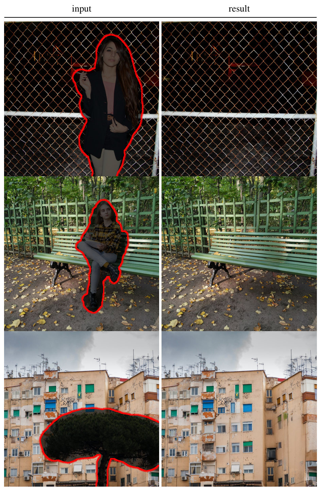
In particular, we compare the inpainting efficiency of LDM-1 (i.e. a pixel-based conditional DM) with LDM-4, for both KL and VQ regularizations, as well as VQ-LDM-4 without any attention in the first stage (see Tab. 8), where the latter reduces GPU memory for decoding at high resolutions. For comparability, we fix the number of parameters for all models. Tab. 6 reports the training and sampling throughput at resolution and , the total training time in hours per epoch and the FID score on the validation split after six epochs. Overall, we observe a speed-up of at least between pixel- and latent-based diffusion models while improving FID scores by a factor of at least .
具体来说，我们比较 LDM-1（即像素空间的条件扩散模型）和 LDM-4 的修复效率，后者包括 KL 和 VQ 两种正则化，以及第一阶段不用任何注意力的 VQ-LDM-4（见表 8），最后一种能减少高分辨率解码时的 GPU 内存。为了便于比较，所有模型的参数量都固定。表 6 给出分辨率 和 下的训练和采样吞吐量、每个 epoch 的总训练小时数，以及六个 epoch 后验证集上的 FID。总体上，隐空间相对像素空间至少提速 ，FID 至少改善 。
The comparison with other inpainting approaches in Tab. 7 shows that our model with attention improves the overall image quality as measured by FID over that of [88]. LPIPS between the unmasked images and our samples is slightly higher than that of [88]. We attribute this to [88] only producing a single result which tends to recover more of an average image compared to the diverse results produced by our LDM cf. Fig. 21. Additionally in a user study (Tab. 4) human subjects favor our results over those of [88].
与其他图像修复方法的比较（表 7）显示，带注意力的模型用 FID 衡量的整体图像质量优于 [88]。未掩码图像与我们样本之间的 LPIPS 略高于 [88]。我们认为原因是 [88] 只产生一个结果，它更倾向于恢复一张平均图像，而我们的 LDM 产生多样的结果，参见图 21。另外，在用户研究（表 4）中，受试者更喜欢我们的结果，而不是 [88] 的结果。
Based on these initial results, we also trained a larger diffusion model (big in Tab. 7) in the latent space of the VQ-regularized first stage without attention. Following [15], the UNet of this diffusion model uses attention layers on three levels of its feature hierarchy, the BigGAN [3] residual block for up- and downsampling and has 387M parameters instead of 215M. After training, we noticed a discrepancy in the quality of samples produced at resolutions and , which we hypothesize to be caused by the additional attention modules. However, fine-tuning the model for half an epoch at resolution allows the model to adjust to the new feature statistics and sets a new state of the art FID on image inpainting (big, w/o attn, w/ ft in Tab. 7, Fig. 11.).
基于这些初步结果，我们还在不带注意力的 VQ 正则化第一阶段的隐空间中，训练了一个更大的扩散模型（表 7 中的 big）。按照 [15] 的做法，这个扩散模型的 U-Net 在特征层级的三层上使用注意力层，用 BigGAN [3] 残差块做上下采样，参数量为 3.87 亿而不是 2.15 亿。训练后，我们注意到分辨率 和 的样本质量有差异，推测是增加的注意力模块造成的。不过，在 分辨率上微调半个 epoch，模型就能适应新的特征统计，并创造了图像修复 FID 的新纪录（表 7 的 big、w/o attn、w/ ft，图 11）。
| 40-50% masked | All samples | |||
| Method | FID | LPIPS | FID | LPIPS |
| LDM-4 (ours, big, w/ ft) | 9.39 | 0.246 0.042 | 1.50 | 0.137 0.080 |
| LDM-4 (ours, big, w/o ft) | 12.89 | 0.257 0.047 | 2.40 | 0.142 0.085 |
| LDM-4 (ours, w/ attn) | 11.87 | 0.257 0.042 | 2.15 | 0.144 0.084 |
| LDM-4 (ours, w/o attn) | 12.60 | 0.259 0.041 | 2.37 | 0.145 0.084 |
| LaMa[88]† | 12.31 | 0.243 0.038 | 2.23 | 0.134 0.080 |
| LaMa[88] | 12.0 | 0.24 | 2.21 | 0.14 |
| CoModGAN[107] | 10.4 | 0.26 | 1.82 | 0.15 |
| RegionWise[52] | 21.3 | 0.27 | 4.75 | 0.15 |
| DeepFill v2[104] | 22.1 | 0.28 | 5.20 | 0.16 |
| EdgeConnect[58] | 30.5 | 0.28 | 8.37 | 0.16 |
While LDMs significantly reduce computational requirements compared to pixel-based approaches, their sequential sampling process is still slower than that of GANs. Moreover, the use of LDMs can be questionable when high precision is required: although the loss of image quality is very small in our autoencoding models (see Fig. 1), their reconstruction capability can become a bottleneck for tasks that require fine-grained accuracy in pixel space. We assume that our superresolution models (Sec. 4.4) are already somewhat limited in this respect.
LDM 比像素空间方法大幅降低了计算需求，但顺序采样过程仍然比 GAN 慢。此外，在需要高精度时，使用 LDM 可能有问题：虽然 自编码模型的图像质量损失很小（见图 1），但对需要像素空间精细准确度的任务，它们的重建能力可能成为瓶颈。我们认为超分辨率模型（第 4.4 节）在这方面已经受到一定限制。
Generative models for media like imagery are a double-edged sword: On the one hand, they enable various creative applications, and in particular approaches like ours that reduce the cost of training and inference have the potential to facilitate access to this technology and democratize its exploration. On the other hand, it also means that it becomes easier to create and disseminate manipulated data or spread misinformation and spam. In particular, the deliberate manipulation of images (“deep fakes”) is a common problem in this context, and women in particular are disproportionately affected by it [13, 24].
图像这类媒体的生成模型是一把双刃剑：一方面，它们支持各种创造性应用，尤其是我们这类降低训练和推理成本的方法，有助于让更多人用上这项技术、探索这项技术。另一方面，这也意味着制造和传播被篡改的数据、散布虚假信息和垃圾信息变得更容易了。特别是蓄意篡改图像（「深度伪造」）是这方面的一个常见问题，女性受到的影响尤其严重 [13, 24]。
Generative models can also reveal their training data [5, 90], which is of great concern when the data contain sensitive or personal information and were collected without explicit consent. However, the extent to which this also applies to DMs of images is not yet fully understood.
生成模型还可能暴露训练数据 [5, 90]。当数据包含敏感或个人信息、且未经明确同意收集时，这一点尤其令人担忧。不过，这在多大程度上也适用于图像扩散模型，目前还没有完全弄清楚。
Finally, deep learning modules tend to reproduce or exacerbate biases that are already present in the data [22, 38, 91]. While diffusion models achieve better coverage of the data distribution than e.g. GAN-based approaches, the extent to which our two-stage approach that combines adversarial training and a likelihood-based objective misrepresents the data remains an important research question.
最后，深度学习模块往往会重现甚至加剧数据中已有的偏见 [22, 38, 91]。扩散模型对数据分布的覆盖好于基于 GAN 的方法等，但我们这种结合了对抗训练和基于似然目标的两阶段方法在多大程度上错误地表示数据，仍是一个重要的研究问题。
For a more general, detailed discussion of the ethical considerations of deep generative models, see e.g. [13].
关于深度生成模型伦理问题更一般、更详细的讨论，可参见 [13]。
We have presented latent diffusion models, a simple and efficient way to significantly improve both the training and sampling efficiency of denoising diffusion models without degrading their quality. Based on this and our cross-attention conditioning mechanism, our experiments could demonstrate favorable results compared to state-of-the-art methods across a wide range of conditional image synthesis tasks without task-specific architectures.†
我们提出了隐空间扩散模型，这是一种简单高效的方法，能大幅提高去噪扩散模型的训练和采样效率，而不降低质量。在此基础上，结合交叉注意力条件机制，我们的实验在多种条件图像合成任务上，不使用任务专用结构，就取得了优于当前最好方法的结果。†
Appendix
附录
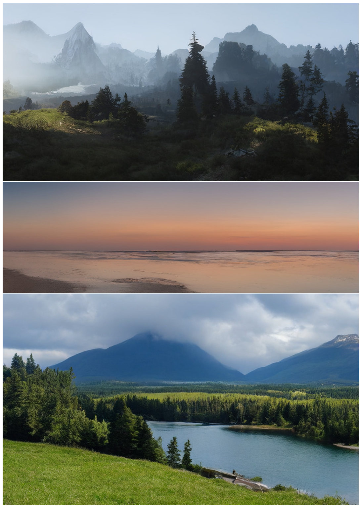
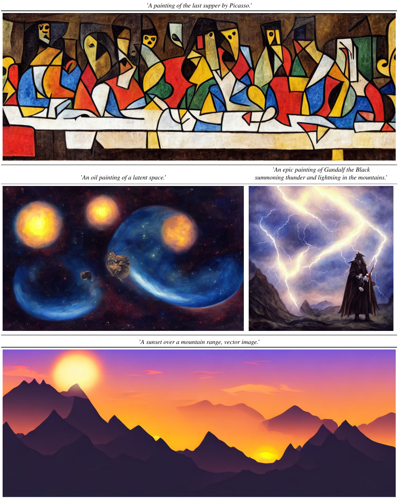
† This work has been supported by the German Federal Ministry for Economic Affairs and Energy within the project ’KI-Absicherung - Safe AI for automated driving’ and by the German Research Foundation (DFG) project 421703927.
本工作由德国联邦经济事务和能源部的「KI-Absicherung - Safe AI for automated driving」项目和德国研究基金会 (DFG) 项目 421703927 资助。
Here we list changes between this version (https://arxiv.org/abs/2112.10752v2) of the paper and the previous version, i.e. https://arxiv.org/abs/2112.10752v1.
这里列出本版本 (https://arxiv.org/abs/2112.10752v2) 与上一版本 (https://arxiv.org/abs/2112.10752v1) 之间的改动。
We updated the results on text-to-image synthesis in Sec. 4.3 which were obtained by training a new, larger model (1.45B parameters). This also includes a new comparison to very recent competing methods on this task that were published on arXiv at the same time as ([59, 109]) or after ([26]) the publication of our work.
我们更新了第 4.3 节中文本生成图像的结果，这些结果来自新训练的更大的模型（14.5 亿参数）。其中还包括与最新竞争方法的比较，这些方法与我们的工作同时 ([59, 109]) 或之后 ([26]) 发表在 arXiv 上。
We updated results on class-conditional synthesis on ImageNet in Sec. 4.1, Tab. 3 (see also Sec. D.4) obtained by retraining the model with a larger batch size. The corresponding qualitative results in Fig. 26 and Fig. 27 were also updated. Both the updated text-to-image and the class-conditional model now use classifier-free guidance [32] as a measure to increase visual fidelity.
我们更新了第 4.1 节、表 3（另见附录 D.4）中 ImageNet 类别条件合成的结果，它们来自用更大批量重新训练的模型。图 26 和图 27 中相应的定性结果也做了更新。更新后的文本生成图像模型和类别条件模型现在都使用无分类器引导 [32] 来提高视觉保真度。
We conducted a user study (following the scheme suggested by Saharia et al [72]) which provides additional evaluation for our inpainting (Sec. 4.5) and superresolution models (Sec. 4.4).
我们做了一项用户研究（按 Saharia 等人 [72] 提出的方案），为图像修复（第 4.5 节）和超分辨率模型（第 4.4 节）提供额外的评估。
Diffusion models can be specified in terms of a signal-to-noise ratio consisting of sequences and which, starting from a data sample , define a forward diffusion process as
扩散模型可以用信噪比 来规定，它由序列 和 构成。从数据样本 出发，它们定义前向扩散过程 ：
| (4) |
with the Markov structure for :
对 具有马尔可夫结构：
| (5) | ||||
| (6) | ||||
| (7) |
Denoising diffusion models are generative models which revert this process with a similar Markov structure running backward in time, i.e. they are specified as
去噪扩散模型是生成模型 ，它用类似的、沿时间反向运行的马尔可夫结构反转这个过程，即：
| (8) |
The evidence lower bound (ELBO) associated with this model then decomposes over the discrete time steps as
这个模型的证据下界 (Evidence Lower Bound, ELBO) 按离散时间步分解为：
| (9) |
The prior is typically choosen as a standard normal distribution and the first term of the ELBO then depends only on the final signal-to-noise ratio . To minimize the remaining terms, a common choice to parameterize is to specify it in terms of the true posterior but with the unknown replaced by an estimate based on the current step . This gives [45]
先验 通常取标准正态分布，于是证据下界的第一项只取决于最终信噪比 。为了最小化其余各项，常见的选择是用真实后验 来参数化 ，只把未知的 换成基于当前步 的估计 。由此得到 [45]
| (10) | ||||
| (11) |
where the mean can be expressed as
其中均值可以写成
| (12) |
In this case, the sum of the ELBO simplify to
这时，证据下界的求和化简为
| (13) |
| (14) |
to express the reconstruction term as a denoising objective,
把重建项写成去噪目标，
| (15) |
and the reweighting, which assigns each of the terms the same weight and results in Eq. (1).
再做重新加权，让每一项的权重相同，就得到式 (1)。
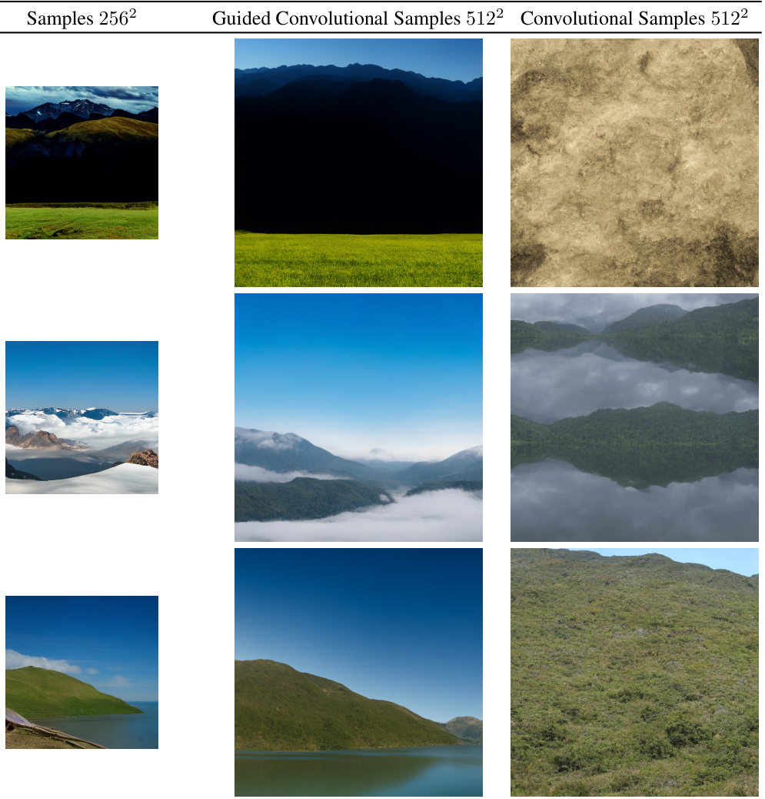
An intriguing feature of diffusion models is that unconditional models can be conditioned at test-time [15, 82, 85]. In particular, [15] presented an algorithm to guide both unconditional and conditional models trained on the ImageNet dataset with a classifier , trained on each of the diffusion process. We directly build on this formulation and introduce post-hoc image-guiding:
扩散模型的一个有趣特性是，无条件模型可以在测试时加上条件 [15, 82, 85]。特别是，[15] 提出一种算法，用在扩散过程每个 上训练的分类器 ，引导在 ImageNet 数据集上训练的无条件模型和条件模型。我们直接基于这一形式，引入事后图像引导：
For an epsilon-parameterized model with fixed variance, the guiding algorithm as introduced in [15] reads:
对预测噪声 (ε) 参数化、方差固定的模型，[15] 提出的引导算法为：
| (16) |
This can be interpreted as an update correcting the “score” with a conditional distribution .
这可以理解为用条件分布 修正「分数」 的一次更新。
So far, this scenario has only been applied to single-class classification models. We re-interpret the guiding distribution
as a general purpose image-to-image translation task given a target image ,
where can be any differentiable transformation adopted to the image-to-image translation task at hand,
such as the identity, a downsampling operation or similar.
As an example, we can assume a Gaussian guider with fixed variance , such that
到目前为止，这种做法只用于单类别的分类模型。我们把引导分布 重新解释为给定目标图像 的通用图像到图像转换任务，其中 可以是适合当前转换任务的任意可微变换，比如恒等变换、下采样操作等。例如，可以假设一个方差固定为 的高斯引导器，于是
| (17) |
becomes a regression objective.
就成为 回归目标。
Fig. 14 demonstrates how this formulation can serve as an upsampling mechanism of an unconditional model trained on images, where unconditional samples of size guide the convolutional synthesis of images and is a bicubic downsampling. Following this motivation, we also experiment with a perceptual similarity guiding and replace the objective with the LPIPS [106] metric, see Sec. 4.4.
图 14 说明了这种形式如何作为在 图像上训练的无条件模型的上采样机制：用大小为 的无条件样本引导 图像的卷积合成， 取 双三次下采样。出于同样的考虑，我们还试验了感知相似度引导，把 目标换成 LPIPS [106] 指标，见第 4.4 节。
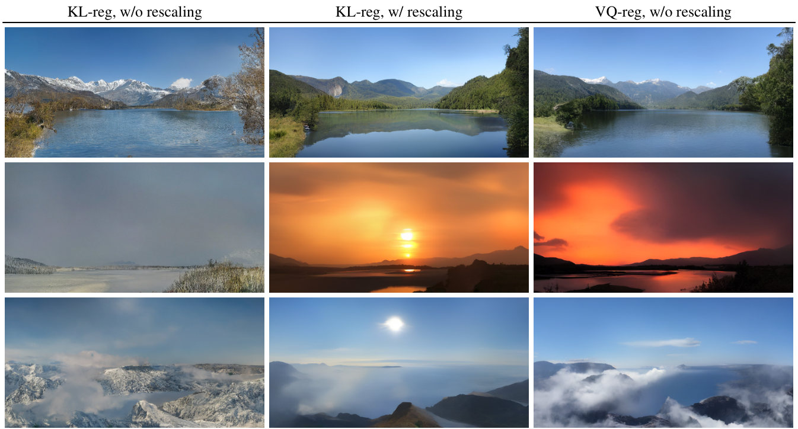
As discussed in Sec. 4.3.2, the signal-to-noise ratio induced by the variance of the latent space (i.e. ) significantly affects the results for convolutional sampling. For example, when training a LDM directly in the latent space of a KL-regularized model (see Tab. 8), this ratio is very high, such that the model allocates a lot of semantic detail early on in the reverse denoising process. In contrast, when rescaling the latent space by the component-wise standard deviation of the latents as described in Sec. G, the SNR is descreased. We illustrate the effect on convolutional sampling for semantic image synthesis in Fig. 15. Note that the VQ-regularized space has a variance close to , such that it does not have to be rescaled.
如第 4.3.2 节所述，由隐空间方差决定的信噪比（即 ）对卷积采样的结果影响很大。例如，直接在 KL 正则化模型（见表 8）的隐空间中训练 LDM 时，这个比值很高，模型在逆向去噪过程的早期就分配了大量语义细节。相反，如附录 G 所述，按隐变量各分量的标准差缩放隐空间后，信噪比下降。图 15 以语义图像合成为例说明了它对卷积采样的影响。注意 VQ 正则化空间的方差接近 ，因此不需要缩放。
We provide a complete list of various autoenconding models trained on the OpenImages dataset in Tab. 8.
表 8 给出在 OpenImages 数据集上训练的各种自编码模型的完整列表。
| R-FID | R-IS | PSNR | PSIM | SSIM | |||
| 16 VQGAN [23] | 16384 | 256 | 4.98 | – | 19.9 | 1.83 | 0.51 |
| 16 VQGAN [23] | 1024 | 256 | 7.94 | – | 19.4 | 1.98 | 0.50 |
| 8 DALL-E [66] | 8192 | - | 32.01 | – | 22.8 | 1.95 | 0.73 |
| 32 | 16384 | 16 | 31.83 | 40.40 | 17.45 | 2.58 | 0.41 |
| 16 | 16384 | 8 | 5.15 | 144.55 | 20.83 | 1.73 | 0.54 |
| 8 | 16384 | 4 | 1.14 | 201.92 | 23.07 | 1.17 | 0.65 |
| 8 | 256 | 4 | 1.49 | 194.20 | 22.35 | 1.26 | 0.62 |
| 4 | 8192 | 3 | 0.58 | 224.78 | 27.43 | 0.53 | 0.82 |
| 4† | 8192 | 3 | 1.06 | 221.94 | 25.21 | 0.72 | 0.76 |
| 4 | 256 | 3 | 0.47 | 223.81 | 26.43 | 0.62 | 0.80 |
| 2 | 2048 | 2 | 0.16 | 232.75 | 30.85 | 0.27 | 0.91 |
| 2 | 64 | 2 | 0.40 | 226.62 | 29.13 | 0.38 | 0.90 |
| 32 | KL | 64 | 2.04 | 189.53 | 22.27 | 1.41 | 0.61 |
| 32 | KL | 16 | 7.3 | 132.75 | 20.38 | 1.88 | 0.53 |
| 16 | KL | 16 | 0.87 | 210.31 | 24.08 | 1.07 | 0.68 |
| 16 | KL | 8 | 2.63 | 178.68 | 21.94 | 1.49 | 0.59 |
| 8 | KL | 4 | 0.90 | 209.90 | 24.19 | 1.02 | 0.69 |
| 4 | KL | 3 | 0.27 | 227.57 | 27.53 | 0.55 | 0.82 |
| 2 | KL | 2 | 0.086 | 232.66 | 32.47 | 0.20 | 0.93 |
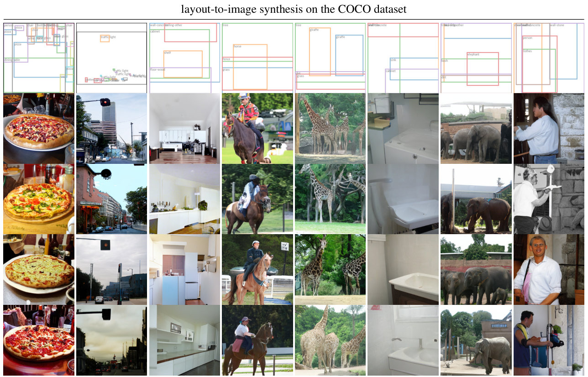
| COCO | OpenImages | OpenImages | |
| Method | FID | FID | FID |
| LostGAN-V2 [87] | 42.55 | - | - |
| OC-GAN [89] | 41.65 | - | - |
| SPADE [62] | 41.11 | - | - |
| VQGAN+T [37] | 56.58 | 45.33 | 48.11 |
| LDM-8 (100 steps, ours) | 42.06† | - | - |
| LDM-4 (200 steps, ours) | 40.91∗ | 32.02 | 35.80 |
Here we provide the quantitative evaluation and additional samples for our layout-to-image models from Sec. 4.3.1. We train a model on the COCO [4] and one on the OpenImages [49] dataset, which we subsequently additionally finetune on COCO. Tab 9 shows the result. Our COCO model reaches the performance of recent state-of-the art models in layout-to-image synthesis, when following their training and evaluation protocol [89]. When finetuning from the OpenImages model, we surpass these works. Our OpenImages model surpasses the results of Jahn et al [37] by a margin of nearly 11 in terms of FID. In Fig. 16 we show additional samples of the model finetuned on COCO.
这里给出第 4.3.1 节中布局生成图像模型的定量评估和更多样本。我们在 COCO [4] 上训练一个模型，在 OpenImages [49] 上训练另一个模型，后者再在 COCO 上微调。表 9 给出结果。按布局生成图像最新模型的训练和评估流程 [89]，我们的 COCO 模型达到了它们的性能。从 OpenImages 模型微调后，我们超过了这些工作。我们的 OpenImages 模型比 Jahn 等人 [37] 的结果好，FID 差距接近 11。图 16 给出在 COCO 上微调的模型的更多样本。
Tab. 10 contains the results for our class-conditional LDM measured in FID and Inception score (IS). LDM-8 requires significantly fewer parameters and compute requirements (see Tab. 18) to achieve very competitive performance. Similar to previous work, we can further boost the performance by training a classifier on each noise scale and guiding with it, see Sec. C. Unlike the pixel-based methods, this classifier is trained very cheaply in latent space. For additional qualitative results, see Fig. 26 and Fig. 27.
表 10 给出类别条件 LDM 的 FID 和 Inception Score (IS)。LDM-8 只需要少得多的参数和计算（见表 18），就能取得很有竞争力的性能。与以往工作类似，还可以在每个噪声尺度上训练一个分类器并用它引导，进一步提高性能，见附录 C。与像素空间方法不同，这个分类器在隐空间中训练，成本很低。更多定性结果见图 26 和图 27。
| Method | FID | IS | Precision | Recall | ||
|---|---|---|---|---|---|---|
| SR3 [72] | 11.30 | - | - | - | 625M | - |
| ImageBART [21] | 21.19 | - | - | - | 3.5B | - |
| ImageBART [21] | 7.44 | - | - | - | 3.5B | 0.05 acc. rate∗ |
| VQGAN+T [23] | 17.04 | 70.6 | - | - | 1.3B | - |
| VQGAN+T [23] | 5.88 | 304.8 | - | - | 1.3B | 0.05 acc. rate∗ |
| BigGan-deep [3] | 6.95 | 203.6 | 0.87 | 0.28 | 340M | - |
| ADM [15] | 10.94 | 100.98 | 0.69 | 0.63 | 554M | 250 DDIM steps |
| ADM-G [15] | 4.59 | 186.7 | 0.82 | 0.52 | 608M | 250 DDIM steps |
| ADM-G,ADM-U [15] | 3.85 | 221.72 | 0.84 | 0.53 | n/a | 2 250 DDIM steps |
| CDM [31] | 4.88 | 158.71 | - | - | n/a | 2 100 DDIM steps |
| LDM-8 (ours) | 17.41 | 72.92 | 0.65 | 0.62 | 395M | 200 DDIM steps, 2.9M train steps, batch size 64 |
| LDM-8-G (ours) | 8.11 | 190.43 | 0.83 | 0.36 | 506M | 200 DDIM steps, classifier scale 10, 2.9M train steps, batch size 64 |
| LDM-8 (ours) | 15.51 | 79.03 | 0.65 | 0.63 | 395M | 200 DDIM steps, 4.8M train steps, batch size 64 |
| LDM-8-G (ours) | 7.76 | 209.52 | 0.84 | 0.35 | 506M | 200 DDIM steps, classifier scale 10, 4.8M train steps, batch size 64 |
| LDM-4 (ours) | 10.56 | 103.49 | 0.71 | 0.62 | 400M | 250 DDIM steps, 178K train steps, batch size 1200 |
| LDM-4-G (ours) | 3.95 | 178.22 | 0.81 | 0.55 | 400M | 250 DDIM steps, unconditional guidance [32] scale 1.25, 178K train steps, batch size 1200 |
| LDM-4-G (ours) | 3.60 | 247.67 | 0.87 | 0.48 | 400M | 250 DDIM steps, unconditional guidance [32] scale 1.5, 178K train steps, batch size 1200 |
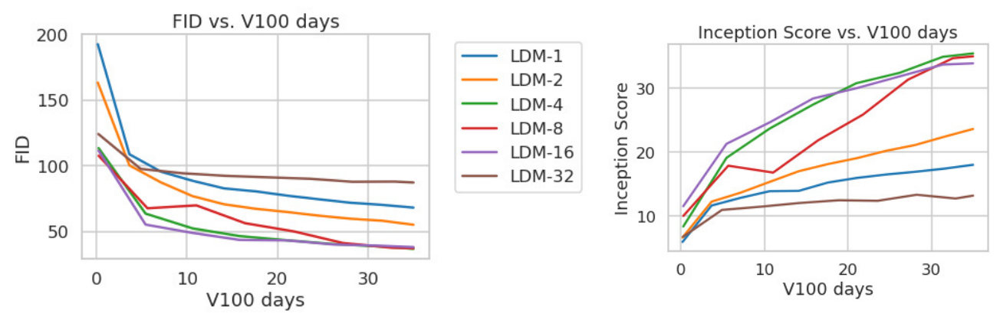
For the assessment of sample quality over the training progress in Sec. 4.1, we reported FID and IS scores as a function of train steps. Another possibility is to report these metrics over the used resources in V100 days. Such an analysis is additionally provided in Fig. 17, showing qualitatively similar results.
第 4.1 节评估样本质量随训练进度的变化时，我们把 FID 和 IS 作为训练步数的函数给出。另一种做法是把这些指标作为所用资源（V100 日）的函数给出。图 17 提供了这种分析，定性结果相近。
| Method | FID | IS | PSNR | SSIM |
|---|---|---|---|---|
| Image Regression [72] | 15.2 | 121.1 | 27.9 | 0.801 |
| SR3 [72] | 5.2 | 180.1 | 26.4 | 0.762 |
| LDM-4 (ours, 100 steps) | 2.8†/4.8‡ | 166.3 | 24.43.8 | 0.690.14 |
| LDM-4 (ours, 50 steps, guiding) | 4.4†/6.4‡ | 153.7 | 25.83.7 | 0.740.12 |
| LDM-4 (ours, 100 steps, guiding) | 4.4†/6.4‡ | 154.1 | 25.73.7 | 0.730.12 |
| LDM-4 (ours, 100 steps, +15 ep.) | 2.6† / 4.6‡ | 169.765.03 | 24.43.8 | 0.690.14 |
| Pixel-DM (100 steps, +15 ep.) | 5.1† / 7.1‡ | 163.064.67 | 24.13.3 | 0.590.12 |
For better comparability between LDMs and diffusion models in pixel space, we extend our analysis from Tab. 5 by comparing a diffusion model trained for the same number of steps and with a comparable number1 of parameters to our LDM. The results of this comparison are shown in the last two rows of Tab. 11 and demonstrate that LDM achieves better performance while allowing for significantly faster sampling. A qualitative comparison is given in Fig. 20 which shows random samples from both LDM and the diffusion model in pixel space.
为了更好地比较 LDM 和像素空间的扩散模型，我们扩展表 5 的分析，比较一个训练步数相同、参数量可比1的扩散模型和我们的 LDM。比较结果在表 11 的最后两行，表明 LDM 性能更好，采样也快得多。图 20 给出定性比较，展示 LDM 和像素空间扩散模型的随机样本。
1 It is not possible to exactly match both architectures since the diffusion model operates in the pixel space
两种结构无法完全一致，因为扩散模型在像素空间中运算。
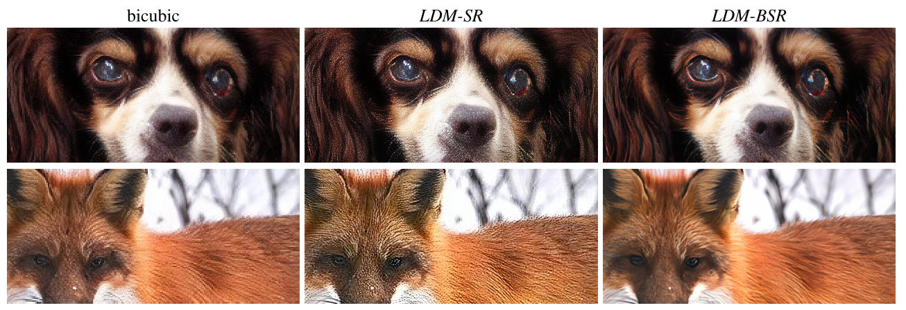
To evaluate generalization of our LDM-SR, we apply it both on synthetic LDM samples from a class-conditional ImageNet model (Sec. 4.1) and images crawled from the internet. Interestingly, we observe that LDM-SR, trained only with a bicubicly downsampled conditioning as in [72], does not generalize well to images which do not follow this pre-processing. Hence, to obtain a superresolution model for a wide range of real world images, which can contain complex superpositions of camera noise, compression artifacts, blurr and interpolations, we replace the bicubic downsampling operation in LDM-SR with the degration pipeline from [105]. The BSR-degradation process is a degradation pipline which applies JPEG compressions noise, camera sensor noise, different image interpolations for downsampling, Gaussian blur kernels and Gaussian noise in a random order to an image. We found that using the bsr-degredation process with the original parameters as in [105] leads to a very strong degradation process. Since a more moderate degradation process seemed apppropiate for our application, we adapted the parameters of the bsr-degradation (our adapted degradation process can be found in our code base at https://github.com/CompVis/latent-diffusion). Fig. 18 illustrates the effectiveness of this approach by directly comparing LDM-SR with LDM-BSR. The latter produces images much sharper than the models confined to a fixed pre-processing, making it suitable for real-world applications. Further results of LDM-BSR are shown on LSUN-cows in Fig. 19.
为了评估 LDM-SR 的泛化能力，我们把它用在类别条件 ImageNet 模型（第 4.1 节）生成的 LDM 样本和从互联网抓取的图像上。我们发现，按 [72] 的做法只用双三次下采样条件训练的 LDM-SR，不能很好地泛化到没有经过这种预处理的图像。因此，为了得到适用于各种真实图像（它们可能包含相机噪声、压缩伪影、模糊和插值的复杂叠加）的超分辨率模型，我们把 LDM-SR 中的双三次下采样操作换成 [105] 的退化流程。BSR 退化过程以随机顺序给图像施加 JPEG 压缩噪声、相机传感器噪声、下采样时不同的图像插值、高斯模糊核和高斯噪声。我们发现，使用 [105] 的原始参数时退化过强。由于我们的应用更适合温和一些的退化过程，我们调整了 BSR 退化的参数（调整后的退化过程见代码库 https://github.com/CompVis/latent-diffusion）。图 18 直接比较 LDM-SR 和 LDM-BSR，说明这种做法很有效。后者生成的图像比限定固定预处理的模型清晰得多，适合真实世界的应用。LDM-BSR 在 LSUN-cows 上的更多结果见图 19。
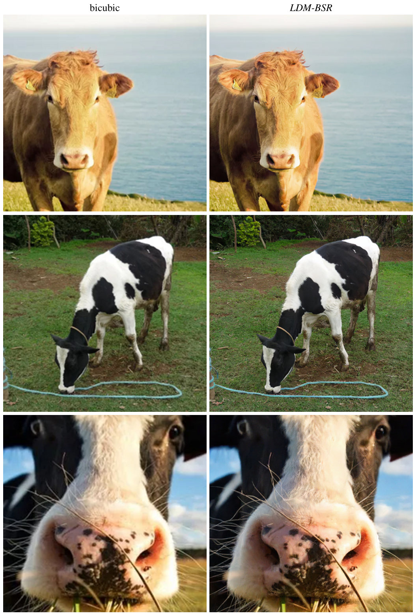
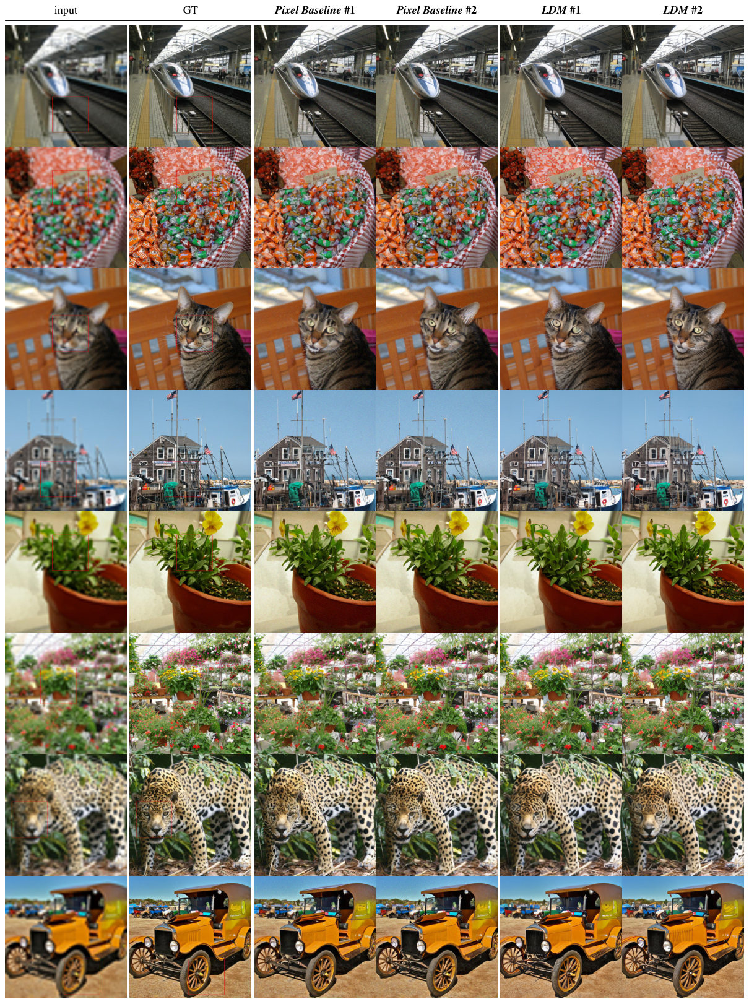
We provide an overview of the hyperparameters of all trained LDM models in Tab. 12, Tab. 13, Tab. 14 and Tab. 15.
| CelebA-HQ | FFHQ | LSUN-Churches | LSUN-Bedrooms | |
| 4 | 4 | 8 | 4 | |
| -shape | - | |||
| 8192 | 8192 | - | 8192 | |
| Diffusion steps | 1000 | 1000 | 1000 | 1000 |
| Noise Schedule | linear | linear | linear | linear |
| 274M | 274M | 294M | 274M | |
| Channels | 224 | 224 | 192 | 224 |
| Depth | 2 | 2 | 2 | 2 |
| Channel Multiplier | 1,2,3,4 | 1,2,3,4 | 1,2,2,4,4 | 1,2,3,4 |
| Attention resolutions | 32, 16, 8 | 32, 16, 8 | 32, 16, 8, 4 | 32, 16, 8 |
| Head Channels | 32 | 32 | 24 | 32 |
| Batch Size | 48 | 42 | 96 | 48 |
| Iterations∗ | 410k | 635k | 500k | 1.9M |
| Learning Rate | 9.6e-5 | 8.4e-5 | 5.e-5 | 9.6e-5 |
| LDM-1 | LDM-2 | LDM-4 | LDM-8 | LDM-16 | LDM-32 | |
| -shape | ||||||
| - | 2048 | 8192 | 16384 | 16384 | 16384 | |
| Diffusion steps | 1000 | 1000 | 1000 | 1000 | 1000 | 1000 |
| Noise Schedule | linear | linear | linear | linear | linear | linear |
| Model Size | 396M | 391M | 391M | 395M | 395M | 395M |
| Channels | 192 | 192 | 192 | 256 | 256 | 256 |
| Depth | 2 | 2 | 2 | 2 | 2 | 2 |
| Channel Multiplier | 1,1,2,2,4,4 | 1,2,2,4,4 | 1,2,3,5 | 1,2,4 | 1,2,4 | 1,2,4 |
| Number of Heads | 1 | 1 | 1 | 1 | 1 | 1 |
| Batch Size | 7 | 9 | 40 | 64 | 112 | 112 |
| Iterations | 2M | 2M | 2M | 2M | 2M | 2M |
| Learning Rate | 4.9e-5 | 6.3e-5 | 8e-5 | 6.4e-5 | 4.5e-5 | 4.5e-5 |
| Conditioning | CA | CA | CA | CA | CA | CA |
| CA-resolutions | 32, 16, 8 | 32, 16, 8 | 32, 16, 8 | 32, 16, 8 | 16, 8, 4 | 8, 4, 2 |
| Embedding Dimension | 512 | 512 | 512 | 512 | 512 | 512 |
| Transformers Depth | 1 | 1 | 1 | 1 | 1 | 1 |
| LDM-1 | LDM-2 | LDM-4 | LDM-8 | LDM-16 | LDM-32 | |
| -shape | ||||||
| - | 2048 | 8192 | 16384 | 16384 | 16384 | |
| Diffusion steps | 1000 | 1000 | 1000 | 1000 | 1000 | 1000 |
| Noise Schedule | linear | linear | linear | linear | linear | linear |
| Model Size | 270M | 265M | 274M | 258M | 260M | 258M |
| Channels | 192 | 192 | 224 | 256 | 256 | 256 |
| Depth | 2 | 2 | 2 | 2 | 2 | 2 |
| Channel Multiplier | 1,1,2,2,4,4 | 1,2,2,4,4 | 1,2,3,4 | 1,2,4 | 1,2,4 | 1,2,4 |
| Attention resolutions | 32, 16, 8 | 32, 16, 8 | 32, 16, 8 | 32, 16, 8 | 16, 8, 4 | 8, 4, 2 |
| Head Channels | 32 | 32 | 32 | 32 | 32 | 32 |
| Batch Size | 9 | 11 | 48 | 96 | 128 | 128 |
| Iterations∗ | 500k | 500k | 500k | 500k | 500k | 500k |
| Learning Rate | 9e-5 | 1.1e-4 | 9.6e-5 | 9.6e-5 | 1.3e-4 | 1.3e-4 |
| Task | Text-to-Image | Layout-to-Image | Class-Label-to-Image | Super Resolution | Inpainting | Semantic-Map-to-Image | |
|---|---|---|---|---|---|---|---|
| Dataset | LAION | OpenImages | COCO | ImageNet | ImageNet | Places | Landscapes |
| 8 | 4 | 8 | 4 | 4 | 4 | 8 | |
| -shape | |||||||
| - | 8192 | 16384 | 8192 | 8192 | 8192 | 16384 | |
| Diffusion steps | 1000 | 1000 | 1000 | 1000 | 1000 | 1000 | 1000 |
| Noise Schedule | linear | linear | linear | linear | linear | linear | linear |
| Model Size | 1.45B | 306M | 345M | 395M | 169M | 215M | 215M |
| Channels | 320 | 128 | 192 | 192 | 160 | 128 | 128 |
| Depth | 2 | 2 | 2 | 2 | 2 | 2 | 2 |
| Channel Multiplier | 1,2,4,4 | 1,2,3,4 | 1,2,4 | 1,2,3,5 | 1,2,2,4 | 1,4,8 | 1,4,8 |
| Number of Heads | 8 | 1 | 1 | 1 | 1 | 1 | 1 |
| Dropout | - | - | 0.1 | - | - | - | - |
| Batch Size | 680 | 24 | 48 | 1200 | 64 | 128 | 48 |
| Iterations | 390K | 4.4M | 170K | 178K | 860K | 360K | 360K |
| Learning Rate | 1.0e-4 | 4.8e-5 | 4.8e-5 | 1.0e-4 | 6.4e-5 | 1.0e-6 | 4.8e-5 |
| Conditioning | CA | CA | CA | CA | concat | concat | concat |
| (C)A-resolutions | 32, 16, 8 | 32, 16, 8 | 32, 16, 8 | 32, 16, 8 | - | - | - |
| Embedding Dimension | 1280 | 512 | 512 | 512 | - | - | - |
| Transformer Depth | 1 | 3 | 2 | 1 | - | - | - |
For the experiments on text-to-image and layout-to-image (Sec. 4.3.1) synthesis, we implement the conditioner as an unmasked transformer which processes a tokenized version of the input and produces an output , where . More specifically, the transformer is implemented from transformer blocks consisting of global self-attention layers, layer-normalization and position-wise MLPs as follows2:
在文本生成图像和布局生成图像（第 4.3.1 节）的实验中，我们把条件编码器 实现为无掩码的 Transformer，它处理 token 化后的输入 ，输出 ，其中 。具体来说，这个 Transformer 由 个 Transformer 块组成，每块包含全局自注意力层、层归一化和逐位置 MLP，如下所示2：
| (18) | ||||
| (19) | ||||
| (20) | ||||
| (21) | ||||
| (22) | ||||
| (23) |
With available, the conditioning is mapped into the UNet via the cross-attention mechanism as depicted in Fig. 3. We modify the “ablated UNet” [15] architecture and replace the self-attention layer with a shallow (unmasked) transformer consisting of blocks with alternating layers of (i) self-attention, (ii) a position-wise MLP and (iii) a cross-attention layer; see Tab. 16. Note that without (ii) and (iii), this architecture is equivalent to the “ablated UNet”.
有了 ，条件就通过图 3 所示的交叉注意力机制映射到 U-Net 中。我们修改「消融 U-Net (ablated UNet)」[15] 结构，把自注意力层换成一个由 个块组成的浅层（无掩码）Transformer，块中交替排列 (i) 自注意力、(ii) 逐位置 MLP 和 (iii) 交叉注意力层，见表 16。注意，如果没有 (ii) 和 (iii)，这个结构就等价于「消融 U-Net」。
While it would be possible to increase the representational power of by additionally conditioning on the time step , we do not pursue this choice as it reduces the speed of inference. We leave a more detailed analysis of this modification to future work.
让 额外以时间步 为条件，可以提高其表示能力，但这会降低推理速度，所以我们没有采用。对这种修改更详细的分析留待以后的工作。
For the text-to-image model, we rely on a publicly available3 tokenizer
[99].
The layout-to-image model discretizes the spatial locations of the bounding boxes
and encodes each box as a -tuple, where denotes the (discrete) top-left and the
bottom-right position. Class information is contained in .
See Tab. 17 for the hyperparameters of and Tab. 13 for those of the UNet for both of the above tasks.
文本生成图像模型使用公开可得3的分词器 [99]。布局生成图像模型把边界框的空间位置离散化，把每个框编码成元组 ，其中 表示（离散的）左上角位置， 表示右下角位置，类别信息包含在 中。这两项任务中 的超参数见表 17，U-Net 的超参数见表 13。
Note that the class-conditional model as described in Sec. 4.1 is also implemented via cross-attention, where is a single learnable embedding layer with a dimensionality of 512, mapping classes to .
注意，第 4.1 节所述的类别条件模型也通过交叉注意力实现，其中 是一个 512 维的可学习嵌入层，把类别 映射为 。
2 adapted from https://github.com/lucidrains/x-transformers
改编自 https://github.com/lucidrains/x-transformers
3 https://huggingface.co/transformers/model_doc/bert.html#berttokenizerfast
https://huggingface.co/transformers/model_doc/bert.html#berttokenizerfast
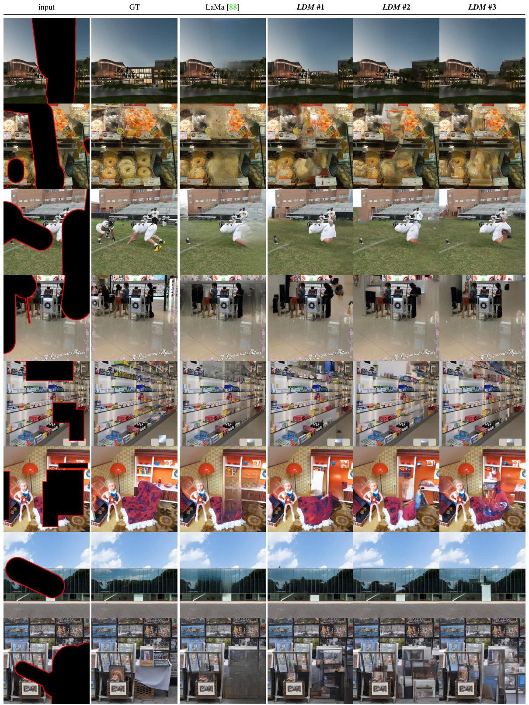
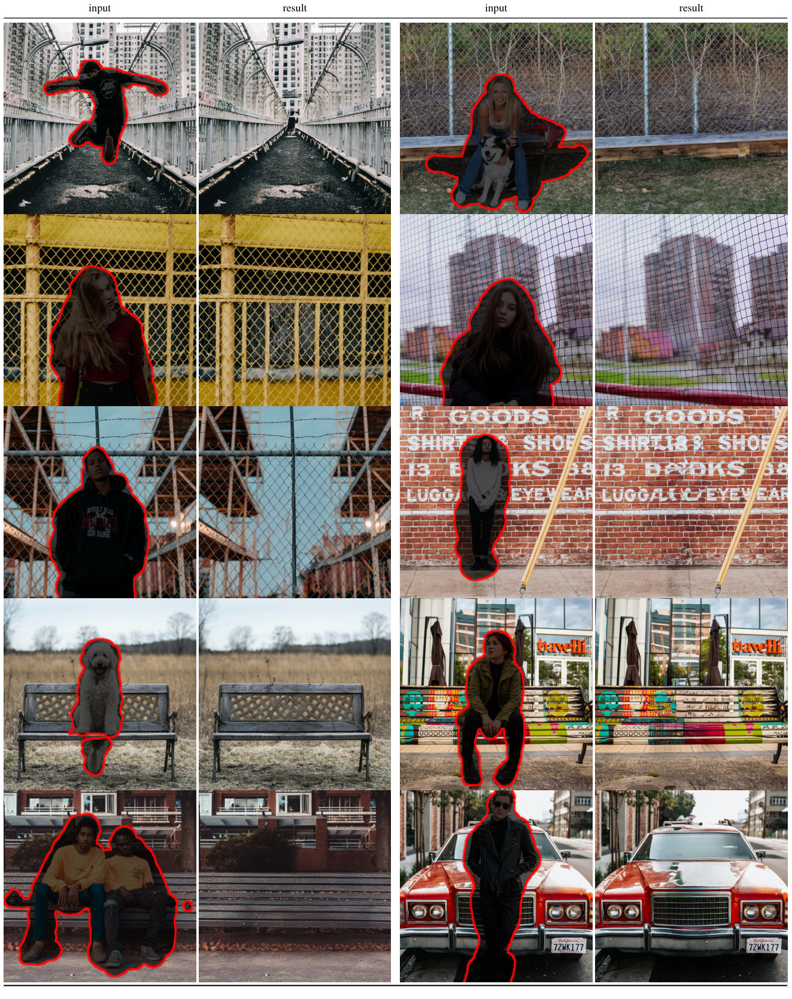
For our experiments on image-inpainting in Sec. 4.5, we used the code of [88] to generate synthetic masks. We use a fixed set of 2k validation and 30k testing samples from Places[108]. During training, we use random crops of size and evaluate on crops of size . This follows the training and testing protocol in [88] and reproduces their reported metrics (see † in Tab. 7). We include additional qualitative results of LDM-4, w/ attn in Fig. 21 and of LDM-4, w/o attn, big, w/ ft in Fig. 22.
在第 4.5 节的图像修复实验中，我们用 [88] 的代码生成合成掩码。我们使用 Places [108] 中固定的一组 2000 个验证样本和 3 万个测试样本。训练时使用大小为 的随机裁剪，评估时使用大小为 的裁剪。这遵循 [88] 的训练和测试流程，并复现了其报告的指标（见表 7 中的 †）。图 21 给出 LDM-4、w/ attn 的更多定性结果，图 22 给出 LDM-4、w/o attn、big、w/ ft 的更多定性结果。
This section provides additional details on evaluation for the experiments shown in Sec. 4.
本节给出第 4 节实验评估的更多细节。
We follow common practice and estimate the statistics for calculating the FID-, Precision- and Recall-scores [29, 50] shown in Tab. 1 and 10 based on 50k samples from our models and the entire training set of each of the shown datasets. For calculating FID scores we use the torch-fidelity package [60]. However, since different data processing pipelines might lead to different results [64], we also evaluate our models with the script provided by Dhariwal and Nichol [15]. We find that results mainly coincide, except for the ImageNet and LSUN-Bedrooms datasets, where we notice slightly varying scores of 7.76 (torch-fidelity) vs. 7.77 (Nichol and Dhariwal) and 2.95 vs 3.0. For the future we emphasize the importance of a unified procedure for sample quality assessment. Precision and Recall are also computed by using the script provided by Nichol and Dhariwal.
我们按通常做法，基于模型的 5 万个样本和各数据集的整个训练集，估计计算表 1 和表 10 中 FID、Precision 和 Recall [29, 50] 所需的统计量。FID 用 torch-fidelity 软件包 [60] 计算。不过，由于不同的数据处理流程可能导致不同的结果 [64]，我们也用 Dhariwal 和 Nichol [15] 提供的脚本评估模型。结果基本一致，只有 ImageNet 和 LSUN-Bedrooms 数据集的分数略有差异，分别是 7.76 (torch-fidelity) 与 7.77 (Nichol 和 Dhariwal)、2.95 与 3.0。我们强调今后需要统一样本质量评估的流程。Precision 和 Recall 也用 Nichol 和 Dhariwal 提供的脚本计算。
Following the evaluation protocol of [66] we compute FID and Inception Score for the Text-to-Image models from Tab. 2 by comparing generated samples with 30000 samples from the validation set of the MS-COCO dataset [51]. FID and Inception Scores are computed with torch-fidelity.
按 [66] 的评估流程，我们把生成样本与 MS-COCO 数据集 [51] 验证集的 3 万个样本比较，计算表 2 中文本生成图像模型的 FID 和 Inception Score。FID 和 Inception Score 用 torch-fidelity 计算。
For assessing the sample quality of our Layout-to-Image models from Tab. 9 on the COCO dataset, we follow common practice [37, 87, 89] and compute FID scores the 2048 unaugmented examples of the COCO Segmentation Challenge split. To obtain better comparability, we use the exact same samples as in [37]. For the OpenImages dataset we similarly follow their protocol and use 2048 center-cropped test images from the validation set.
评估表 9 中布局生成图像模型在 COCO 数据集上的样本质量时，我们按通常做法 [37, 87, 89]，在 COCO 分割挑战划分的 2048 个未增强样本上计算 FID。为了更好地比较，我们使用与 [37] 完全相同的样本。对 OpenImages 数据集，我们同样遵循其流程，使用验证集中 2048 张中心裁剪的测试图像。
We evaluate the super-resolution models on ImageNet following the pipeline suggested in [72], i.e. images with a shorter size less than px are removed (both for training and evaluation). On ImageNet, the low-resolution images are produced using bicubic interpolation with anti-aliasing. FIDs are evaluated using torch-fidelity [60], and we produce samples on the validation split. For FID scores, we additionally compare to reference features computed on the train split, see Tab. 5 and Tab. 11.
我们按 [72] 建议的流程在 ImageNet 上评估超分辨率模型，也就是去掉短边小于 像素的图像（训练和评估都如此）。在 ImageNet 上，低分辨率图像用带抗锯齿的双三次插值生成。FID 用 torch-fidelity [60] 评估，样本在验证集上生成。计算 FID 时，我们还与在训练集上计算的参考特征比较，见表 5 和表 11。
For efficiency reasons we compute the sample quality metrics plotted in Fig. 6, 17 and 7 based on 5k samples. Therefore, the results might vary from those shown in Tab. 1 and 10. All models have a comparable number of parameters as provided in Tab. 13 and 14. We maximize the learning rates of the individual models such that they still train stably. Therefore, the learning rates slightly vary between different runs cf. Tab. 13 and 14.
出于效率考虑，图 6、图 17 和图 7 绘制的样本质量指标基于 5000 个样本计算，因此结果可能与表 1 和表 10 不同。所有模型的参数量都相近，见表 13 和表 14。我们把各模型的学习率尽量调大，以仍能稳定训练为限，所以不同运行的学习率略有差异，参见表 13 和表 14。
For the results of the user study presented in Tab. 4 we followed the protocoll of [72] and and use the 2-alternative force-choice paradigm to assess human preference scores for two distinct tasks. In Task-1 subjects were shown a low resolution/masked image between the corresponding ground truth high resolution/unmasked version and a synthesized image, which was generated by using the middle image as conditioning. For SuperResolution subjects were asked: ’Which of the two images is a better high quality version of the low resolution image in the middle?’. For Inpainting we asked ’Which of the two images contains more realistic inpainted regions of the image in the middle?’. In Task-2, humans were similarly shown the low-res/masked version and asked for preference between two corresponding images generated by the two competing methods. As in [72] humans viewed the images for 3 seconds before responding.
表 4 的用户研究结果遵循 [72] 的流程，用二选一迫选范式评估人类对两项不同任务的偏好分数。在任务 1 中，受试者看到一张低分辨率或带掩码的图像，两侧分别是对应的真实高分辨率或无掩码版本，以及以中间图像为条件生成的合成图像。对超分辨率，问题是：「这两张图中哪一张是中间低分辨率图像更好的高质量版本？」对图像修复，问题是：「这两张图中哪一张的修复区域更真实？」在任务 2 中，受试者同样看到低分辨率或带掩码的版本，并在两种竞争方法生成的对应图像之间选择。与 [72] 一样，受试者观看图像 3 秒后作答。
| Method | Generator | Classifier | Overall | Inference | FID | IS | Precision | Recall | |
| Compute | Compute | Compute | Throughput∗ | ||||||
| LSUN Churches | |||||||||
| StyleGAN2 [42]† | 64 | - | 64 | - | 59M | 3.86 | - | - | - |
| LDM-8 (ours, 100 steps, 410K) | 18 | - | 18 | 6.80 | 256M | 4.02 | - | 0.64 | 0.52 |
| LSUN Bedrooms | |||||||||
| ADM [15]† (1000 steps) | 232 | - | 232 | 0.03 | 552M | 1.9 | - | 0.66 | 0.51 |
| LDM-4 (ours, 200 steps, 1.9M) | 60 | - | 55 | 1.07 | 274M | 2.95 | - | 0.66 | 0.48 |
| CelebA-HQ | |||||||||
| LDM-4 (ours, 500 steps, 410K) | 14.4 | - | 14.4 | 0.43 | 274M | 5.11 | - | 0.72 | 0.49 |
| FFHQ | |||||||||
| StyleGAN2 [42] | 32.13‡ | - | 32.13† | - | 59M | 3.8 | - | - | - |
| LDM-4 (ours, 200 steps, 635K) | 26 | - | 26 | 1.07 | 274M | 4.98 | - | 0.73 | 0.50 |
| ImageNet | |||||||||
| VQGAN-f-4 (ours, first stage) | 29 | - | 29 | - | 55M | 0.58†† | - | - | - |
| VQGAN-f-8 (ours, first stage) | 66 | - | 66 | - | 68M | 1.14†† | - | - | - |
| BigGAN-deep [3]† | 128-256 | 128-256 | - | 340M | 6.95 | 203.6 | 0.87 | 0.28 | |
| ADM [15] (250 steps) † | 916 | - | 916 | 0.12 | 554M | 10.94 | 100.98 | 0.69 | 0.63 |
| ADM-G [15] (25 steps) † | 916 | 46 | 962 | 0.7 | 608M | 5.58 | - | 0.81 | 0.49 |
| ADM-G [15] (250 steps)† | 916 | 46 | 962 | 0.07 | 608M | 4.59 | 186.7 | 0.82 | 0.52 |
| ADM-G,ADM-U [15] (250 steps)† | 329 | 30 | 349 | n/a | n/a | 3.85 | 221.72 | 0.84 | 0.53 |
| LDM-8-G (ours, 100, 2.9M) | 79 | 12 | 91 | 1.93 | 506M | 8.11 | 190.4 | 0.83 | 0.36 |
| LDM-8 (ours, 200 ddim steps 2.9M, batch size 64) | 79 | - | 79 | 1.9 | 395M | 17.41 | 72.92 | 0.65 | 0.62 |
| LDM-4 (ours, 250 ddim steps 178K, batch size 1200) | 271 | - | 271 | 0.7 | 400M | 10.56 | 103.49 | 0.71 | 0.62 |
| LDM-4-G (ours, 250 ddim steps 178K, batch size 1200, classifier-free guidance [32] scale 1.25) | 271 | - | 271 | 0.4 | 400M | 3.95 | 178.22 | 0.81 | 0.55 |
| LDM-4-G (ours, 250 ddim steps 178K, batch size 1200, classifier-free guidance [32] scale 1.5) | 271 | - | 271 | 0.4 | 400M | 3.60 | 247.67 | 0.87 | 0.48 |
In Tab 18 we provide a more detailed analysis on our used compute ressources and compare our best performing models on the CelebA-HQ, FFHQ, LSUN and ImageNet datasets with the recent state of the art models by using their provided numbers, cf. [15]. As they report their used compute in V100 days and we train all our models on a single NVIDIA A100 GPU, we convert the A100 days to V100 days by assuming a speedup of A100 vs V100 [74]4. To assess sample quality, we additionally report FID scores on the reported datasets. We closely reach the performance of state of the art methods as StyleGAN2 [42] and ADM [15] while significantly reducing the required compute resources.
我们在表 18 中更详细地分析所用的计算资源，并利用最新模型提供的数字（参见 [15]），在 CelebA-HQ、FFHQ、LSUN 和 ImageNet 数据集上比较我们表现最好的模型。这些工作以 V100 日报告计算量，而我们的模型都在单块 NVIDIA A100 GPU 上训练，因此我们假设 A100 比 V100 快 [74]4，把 A100 日换算成 V100 日。为了评估样本质量，我们还报告了这些数据集上的 FID。我们接近 StyleGAN2 [42] 和 ADM [15] 这些最好方法的性能，同时大幅减少了所需的计算资源。
4 This factor corresponds to the speedup of the A100 over the V100 for a U-Net, as defined in Fig. 1 in [74]
这个系数对应 [74] 图 1 中定义的 U-Net 上 A100 相对 V100 的提速。
We train all our autoencoder models in an adversarial manner following [23], such that a patch-based discriminator is optimized to differentiate original images from reconstructions .
To avoid arbitrarily scaled latent spaces, we regularize the latent to be zero centered and obtain small variance by introducing an regularizing loss term .
We investigate two different regularization methods: (i) a low-weighted Kullback-Leibler-term between and a standard normal distribution
as in a standard variational autoencoder [46, 69], and, (ii) regularizing the latent space with a vector quantization layer by learning a codebook of different exemplars [96].
To obtain high-fidelity reconstructions we only use a very small regularization for both scenarios, i.e. we either weight the term
by a factor or choose a high codebook dimensionality .
我们按 [23] 的做法以对抗方式训练所有自编码器模型，优化一个基于图块的判别器 ，用来区分原始图像和重建结果 。为了避免隐空间尺度任意，我们引入正则化损失项 ，使隐变量 的均值为零、方差较小。我们考察两种正则化方法：(i) 在 和标准正态分布 之间加一个低权重的 Kullback-Leibler 项，如标准变分自编码器 [46, 69]；(ii) 用向量量化层学习一个包含 个不同样本的码本 [96]，以此正则化隐空间。为了得到高保真的重建，两种情形都只用很小的正则化，也就是把 项的权重取为约 ，或者选择很大的码本维度 。
The full objective to train the autoencoding model reads:
训练自编码模型 的完整目标为：
| (25) |
Note that for training diffusion models on the learned latent space, we again distinguish two cases when learning or (Sec. 4.3): (i) For a KL-regularized latent space, we sample , where . When rescaling the latent, we estimate the component-wise variance
注意，在学到的隐空间上训练扩散模型、学习 或 （第 4.3 节）时，同样要区分两种情形：(i) 对 KL 正则化隐空间，采样 ，其中 。缩放隐变量时，估计各分量的方差
from the first batch in the data, where . The output of is scaled such that the rescaled latent has unit standard deviation, i.e. . (ii) For a VQ-regularized latent space, we extract before the quantization layer and absorb the quantization operation into the decoder, i.e. it can be interpreted as the first layer of .
这个方差从数据的第一个批量估计，其中 。 的输出经过缩放，使缩放后的隐变量具有单位标准差，即 。(ii) 对 VQ 正则化隐空间，在量化层之前取出 ，并把量化操作并入解码器，也就是把它理解为 的第一层。
Finally, we provide additional qualitative results for our landscapes model (Fig. 12, 23, 24 and 25), our class-conditional ImageNet model (Fig. 26 - 27) and our unconditional models for the CelebA-HQ, FFHQ and LSUN datasets (Fig. 28 - 31). Similar as for the inpainting model in Sec. 4.5 we also fine-tuned the semantic landscapes model from Sec. 4.3.2 directly on images and depict qualitative results in Fig. 12 and Fig. 23. For our those models trained on comparably small datasets, we additionally show nearest neighbors in VGG [79] feature space for samples from our models in Fig. 32 - 34.
最后，我们给出风景模型（图 12、图 23、图 24 和图 25）、类别条件 ImageNet 模型（图 26、图 27）以及 CelebA-HQ、FFHQ 和 LSUN 数据集上无条件模型（图 28 至图 31）的更多定性结果。与第 4.5 节的图像修复模型类似，我们也直接在 图像上微调了第 4.3.2 节的风景语义模型，定性结果见图 12 和图 23。对在较小数据集上训练的模型，我们还在图 32 至图 34 中给出模型样本在 VGG [79] 特征空间中的最近邻。
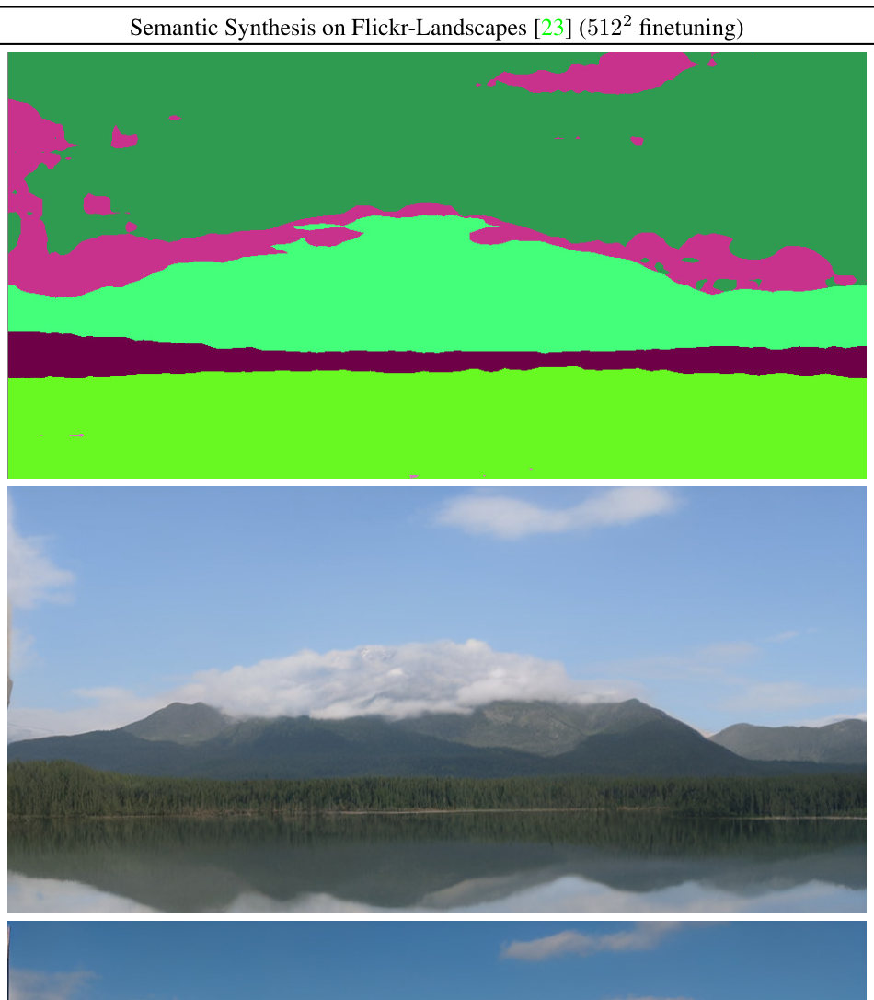
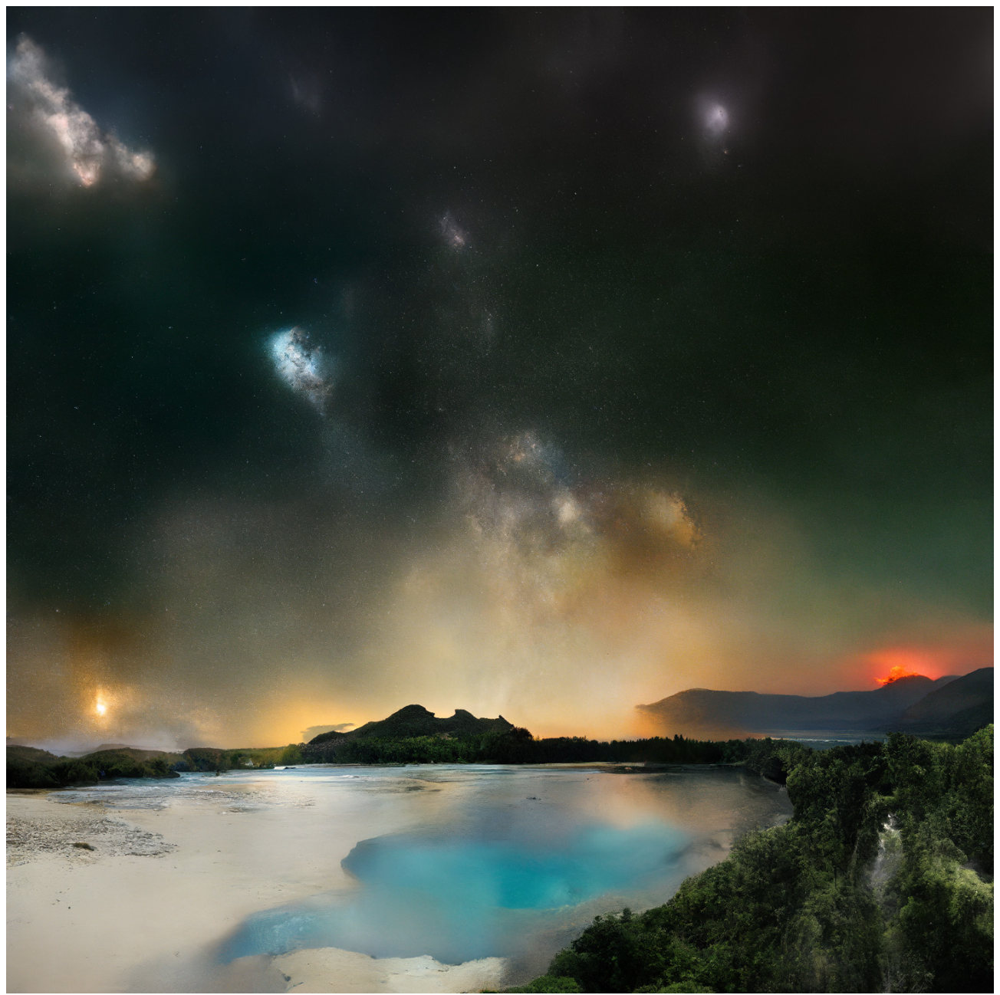
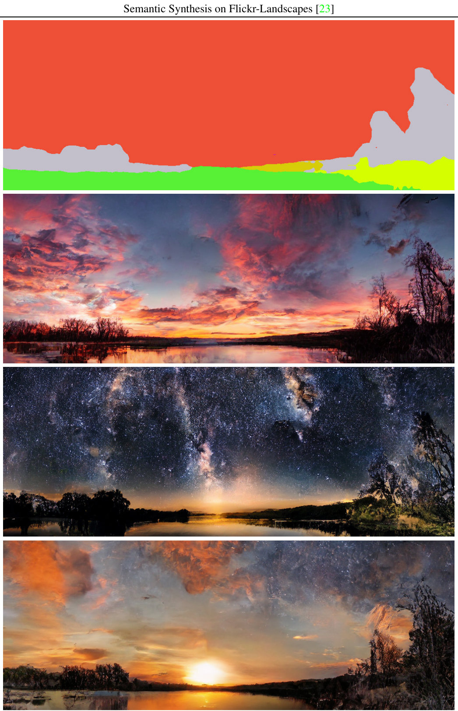
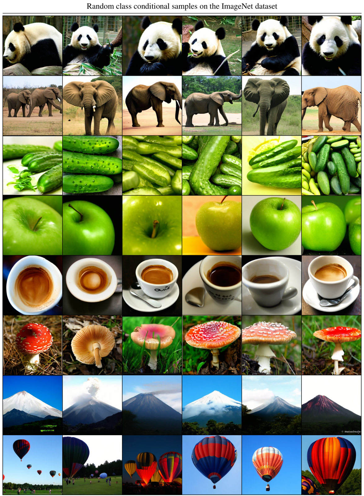
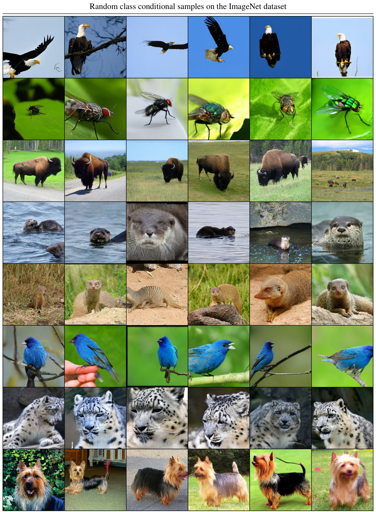
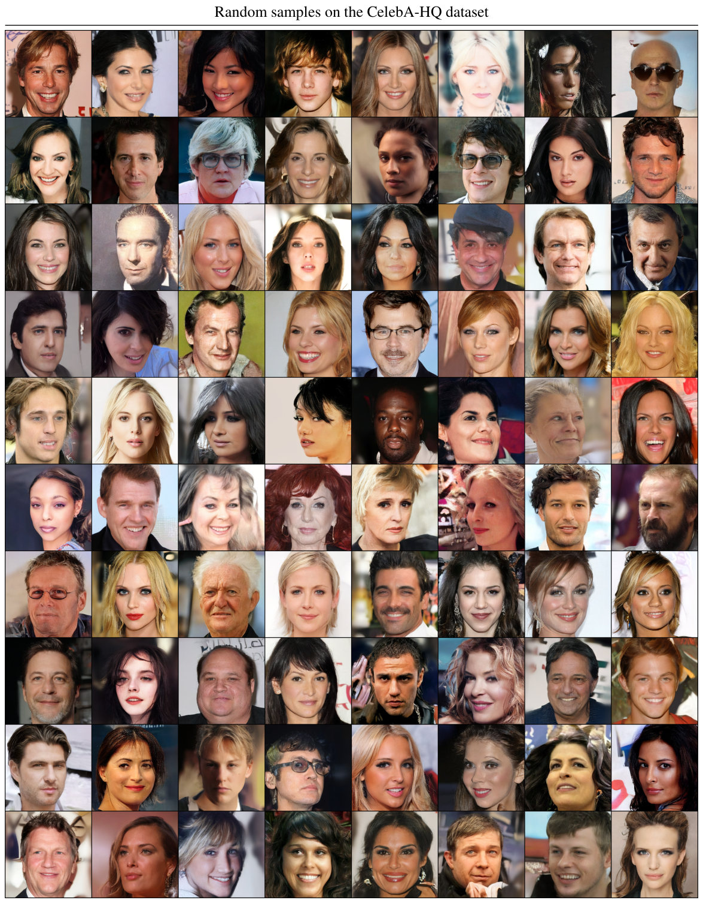
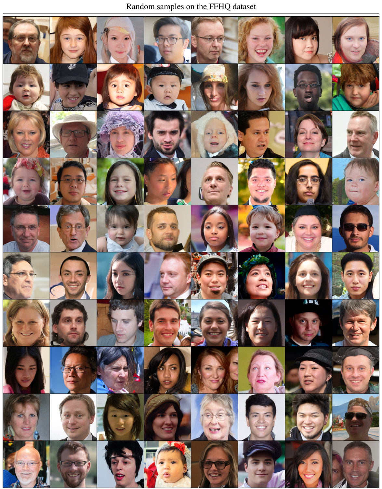
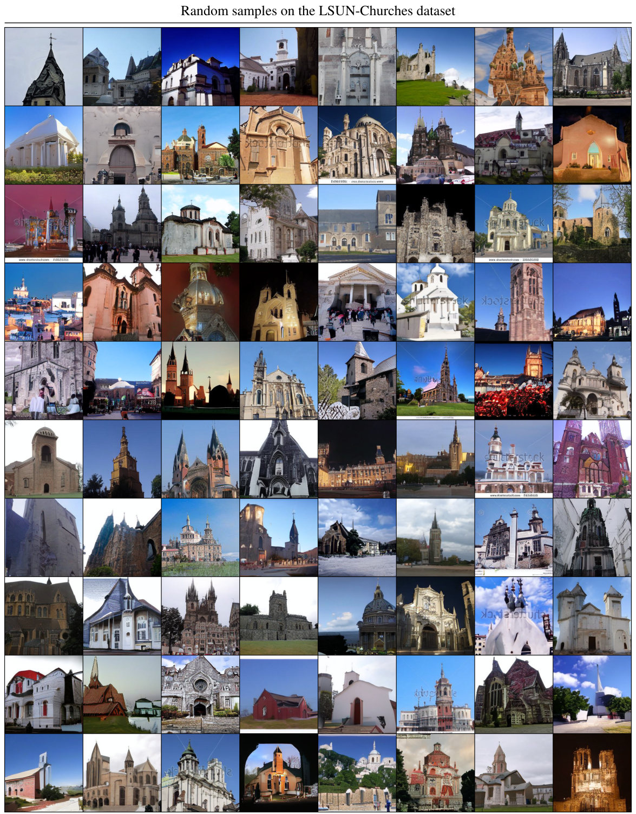
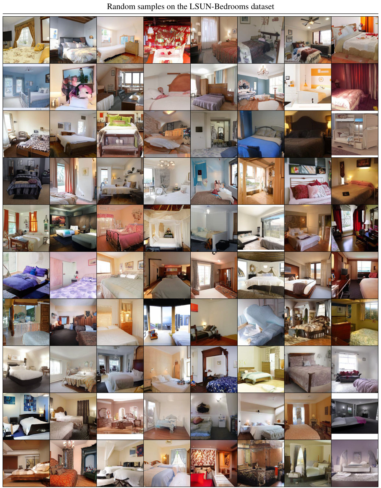
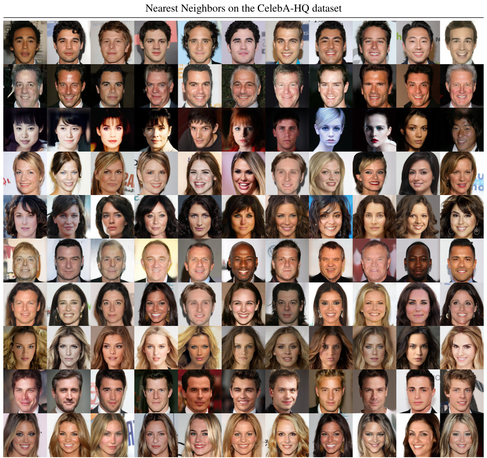
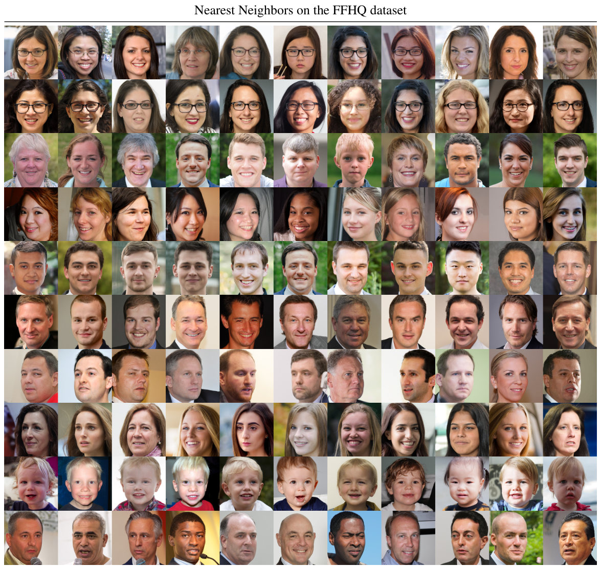
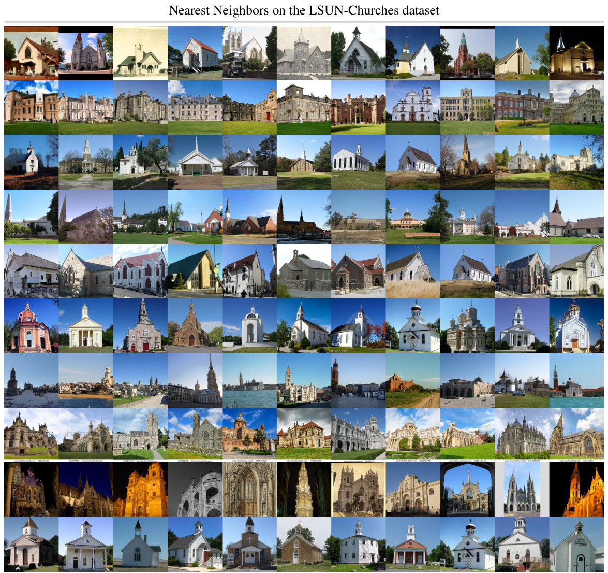
§1列在 Figure 1 的对照行里
§2Generative Adversarial Networks (GAN) [27] allow for efficient sampling of high resolution images with good perceptual quality [3,42] , but are difficult to optimize [2,28,54] and struggle to capture the full data distribution [55] .
§1In contrast, the promising results of GANs [3,27,40] have been revealed to be mostly confined to data with comparably limited variability as their adversarial learning procedure does not easily scale to modeling complex, multi-modal distributions.
§2Generative Adversarial Networks (GAN) [27] allow for efficient sampling of high resolution images with good perceptual quality [3,42] , but are difficult to optimize [2,28,54] and struggle to capture the full data distribution [55] .
§4.3Lastly, following prior work [3,15,21,23] , we evaluate our best-performing class-conditional ImageNet models with f ∈ { 4 , 8 } from Sec. 4.1 in Tab. 3 , Fig. 4 and Sec.
§4.3列在 Table 3 的对照行里
§4.5Following [15] , the UNet of this diffusion model uses attention layers on three levels of its feature hierarchy, the BigGAN [3] residual block for up- and downsampling and has 387M parameters instead of 215M.
§D.4列在 Table 10 的对照行里
§Appendix F列在 Table 18 的对照行里
§4.3列在 Figure 8 的对照行里
§4.3To further analyze the flexibility of the cross-attention based conditioning mechanism we also train models to synthesize images based on semantic layouts on OpenImages [49] , and finetune on COCO [4] , see Fig. 8 .
§D.3列在 Table 9 的对照行里
§D.3We train a model on the COCO [4] and one on the OpenImages [49] dataset, which we subsequently additionally finetune on COCO.
§5Generative models can also reveal their training data [5,90] , which is of great concern when the data contain sensitive or personal information and were collected without explicit consent.
§2While autoregressive models (ARM) [6,10,94,95] achieve strong performance in density estimation, computationally demanding architectures [97] and a sequential sampling process limit them to low resolution images.
§1Recently, diffusion models [82] , which are built from a hierarchy of denoising autoencoders, have shown to achieve impressive results in image synthesis [30,85] and beyond [7,45,48,57] , and define the state-of-the-art in class-conditional image synthesis [15,31] and super-resolution [72] .
§4.5Our evaluation follows the protocol of LaMa [88] , a recent inpainting model that introduces a specialized architecture relying on Fast Fourier Convolutions [8] .
§2Variational autoencoders (VAE) [46] and flow-based models [18,19] enable efficient synthesis of high resolution images [9,44,92] , but sample quality is not on par with GANs.
§2While autoregressive models (ARM) [6,10,94,95] achieve strong performance in density estimation, computationally demanding architectures [97] and a sequential sampling process limit them to low resolution images.
§1Following common practice [11,23,66,67,96] , we separate training into two distinct phases: First, we train an autoencoder which provides a lower-dimensional (and thereby efficient) representational space which is perceptually equivalent to the data space.
§2Two-Stage Image Synthesis To mitigate the shortcomings of individual generative approaches, a lot of research [11,23,67,70,101,103] has gone into combining the strengths of different methods into more efficient and performant models via a two stage approach.
§2While approaches to jointly [93] or separately [80] learn an encoding/decoding model together with a score-based prior exist, the former still require a difficult weighting between reconstruction and generative capabilities [11] and are outperformed by our approach (Sec. 4 ), and the latter focus on highly structured images such as human faces.
§1列在 Figure 1 的对照行里
§3.2列在 Figure 4 的对照行里
§4.1Fig. 6 shows sample quality as a function of training progress for 2M steps of class-conditional models on the ImageNet [12] dataset.
§4.3列在 Table 3 的对照行里
§D.4列在 Table 10 的对照行里
§5In particular, the deliberate manipulation of images (“deep fakes”) is a common problem in this context, and women in particular are disproportionately affected by it [13,24] .
§5For a more general, detailed discussion of the ethical considerations of deep generative models, see e.g . [13] .
§4.3We employ the BERT-tokenizer [14] and implement τ θ as a transformer [97] to infer a latent code which is mapped into the UNet via (multi-head) cross-attention (Sec. 3.3 ).
§1Recently, diffusion models [82] , which are built from a hierarchy of denoising autoencoders, have shown to achieve impressive results in image synthesis [30,85] and beyond [7,45,48,57] , and define the state-of-the-art in class-conditional image synthesis [15,31] and super-resolution [72] .
§1As an example, training the most powerful DMs often takes hundreds of GPU days ( e.g . 150 - 1000 V100 days in [15] ) and repeated evaluations on a noisy version of the input space render also inference expensive, so that producing 50k samples takes approximately 5 days [15] on a single A100 GPU.
§1Secondly, evaluating an already trained model is also expensive in time and memory, since the same model architecture must run sequentially for a large number of steps ( e.g . 25 - 1000 steps in [15] ).
§2Recently, Diffusion Probabilistic Models (DM) [82] , have achieved state-of-the-art results in density estimation [45] as well as in sample quality [15] .
§2The generative power of these models stems from a natural fit to the inductive biases of image-like data when their underlying neural backbone is implemented as a UNet [15,30,71,85] .
§3.2For image synthesis, the most successful models [15,30,72] rely on a reweighted variant of the variational lower bound on p ( x ) , which mirrors denoising score-matching [85] .
§3.3In the context of image synthesis, however, combining the generative power of DMs with other types of conditionings beyond class-labels [15] or blurred variants of the input image [72] is so far an under-explored area of research.
§4.1列在 Table 1 的对照行里
§4.2We outperform prior diffusion based approaches on all but the LSUN-Bedrooms dataset, where our score is close to ADM [15] , despite utilizing half its parameters and requiring 4-times less train resources (see Appendix E.3.5 ).
§4.3Lastly, following prior work [3,15,21,23] , we evaluate our best-performing class-conditional ImageNet models with f ∈ { 4 , 8 } from Sec. 4.1 in Tab. 3 , Fig. 4 and Sec.
§4.3Here we outperform the state of the art diffusion model ADM [15] while significantly reducing computational requirements and parameter count, cf .
§4.3列在 Table 3 的对照行里
§4.4PSNR and SSIM can be pushed by using a post-hoc guiding mechanism [15] and we implement this image-based guider via a perceptual loss, see Sec.
§4.5Following [15] , the UNet of this diffusion model uses attention layers on three levels of its feature hierarchy, the BigGAN [3] residual block for up- and downsampling and has 387M parameters instead of 215M.
§Appendix CAn intriguing feature of diffusion models is that unconditional models can be conditioned at test-time [15,82,85] .
§Appendix CIn particular, [15] presented an algorithm to guide both unconditional and conditional models trained on the ImageNet dataset with a classifier log p Φ ( y | x t ) , trained on each x t of the diffusion process.
§Appendix CFor an epsilon-parameterized model with fixed variance, the guiding algorithm as introduced in [15] reads:
§D.4列在 Table 10 的对照行里
§E.2We modify the “ablated UNet” [15] architecture and replace the self-attention layer with a shallow (unmasked) transformer consisting of T blocks with alternating layers of (i) self-attention, (ii) a position-wise MLP and (iii) a cross-attention layer; see Tab. 16 .
§E.2列在 Table 16 的对照行里
§E.3However, since different data processing pipelines might lead to different results [64] , we also evaluate our models with the script provided by Dhariwal and Nichol [15] .
§Appendix F列在 Table 18 的对照行里
§Appendix FIn Tab 18 we provide a more detailed analysis on our used compute ressources and compare our best performing models on the CelebA-HQ, FFHQ, LSUN and ImageNet datasets with the recent state of the art models by using their provided numbers, cf . [15] .
§Appendix FWe closely reach the performance of state of the art methods as StyleGAN2 [42] and ADM [15] while significantly reducing the required compute resources.
§1DMs belong to the class of likelihood-based models, whose mode-covering behavior makes them prone to spend excessive amounts of capacity (and thus compute resources) on modeling imperceptible details of the data [16,73] .
§2Because pixel based representations of images contain barely perceptible, high-frequency details [16,73] , maximum-likelihood training spends a disproportionate amount of capacity on modeling them, resulting in long training times.
§4.1列在 Table 2 的对照行里
§4.3For quantitative analysis, we follow prior work and evaluate text-to-image generation on the MS-COCO [51] validation set, where our model improves upon powerful AR [17,66] and GAN-based [109] methods, cf .
§2Variational autoencoders (VAE) [46] and flow-based models [18,19] enable efficient synthesis of high resolution images [9,44,92] , but sample quality is not on par with GANs.
§1Moreover, even unconditional DMs can readily be applied to tasks such as inpainting and colorization [85] or stroke-based synthesis [53] , in contrast to other types of generative models [19,46,69] .
§2Variational autoencoders (VAE) [46] and flow-based models [18,19] enable efficient synthesis of high resolution images [9,44,92] , but sample quality is not on par with GANs.
§3.1Our perceptual compression model is based on previous work [23] and consists of an autoencoder trained by combination of a perceptual loss [106] and a patch-based [33] adversarial objective [20,23,103] .
§4.1列在 Table 1 的对照行里
§4.3Lastly, following prior work [3,15,21,23] , we evaluate our best-performing class-conditional ImageNet models with f ∈ { 4 , 8 } from Sec. 4.1 in Tab. 3 , Fig. 4 and Sec.
§D.4列在 Table 10 的对照行里
§5Finally, deep learning modules tend to reproduce or exacerbate biases that are already present in the data [22,38,91] .
§1Following common practice [11,23,66,67,96] , we separate training into two distinct phases: First, we train an autoencoder which provides a lower-dimensional (and thereby efficient) representational space which is perceptually equivalent to the data space.
§1Importantly, and in contrast to previous work [23,66] , we do not need to rely on excessive spatial compression, as we train DMs in the learned latent space, which exhibits better scaling properties with respect to the spatial dimensionality.
§1(i) In contrast to purely transformer-based approaches [23,66] , our method scales more graceful to higher dimensional data and can thus (a) work on a compression level which provides more faithful and detailed reconstructions than previous work (see Fig. 1 ) and (b) can be efficiently applied to high-resolution synthesis of megapixel images.
§2To scale to higher resolutions, several two-stage approaches [23,67,101,103] use ARMs to model a compressed latent image space instead of raw pixels.
§2Two-Stage Image Synthesis To mitigate the shortcomings of individual generative approaches, a lot of research [11,23,67,70,101,103] has gone into combining the strengths of different methods into more efficient and performant models via a two stage approach.
§2Different from VQ-VAEs, VQGANs [23,103] employ a first stage with an adversarial and perceptual objective to scale autoregressive transformers to larger images.
§2However, the high compression rates required for feasible ARM training, which introduces billions of trainable parameters [23,66] , limit the overall performance of such approaches and less compression comes at the price of high computational cost [23,66] .
§3(ii) We exploit the inductive bias of DMs inherited from their UNet architecture [71] , which makes them particularly effective for data with spatial structure and therefore alleviates the need for aggressive, quality-reducing compression levels as required by previous approaches [23,66] .
§3.1Our perceptual compression model is based on previous work [23] and consists of an autoencoder trained by combination of a perceptual loss [106] and a patch-based [33] adversarial objective [20,23,103] .
§3.1This model can be interpreted as a VQGAN [23] but with the quantization layer absorbed by the decoder.
§3.1This is in contrast to previous works [23,66] , which relied on an arbitrary 1D ordering of the learned space z to model its distribution autoregressively and thereby ignored much of the inherent structure of z .
§3.2Unlike previous work that relied on autoregressive, attention-based transformer models in a highly compressed, discrete latent space [23,66,103] , we can take advantage of image-specific inductive biases that our model offers.
§4.1列在 Table 1 的对照行里
§4.3Lastly, following prior work [3,15,21,23] , we evaluate our best-performing class-conditional ImageNet models with f ∈ { 4 , 8 } from Sec. 4.1 in Tab. 3 , Fig. 4 and Sec.
§4.3For semantic synthesis, we use images of landscapes paired with semantic maps [23,61] and concatenate downsampled versions of the semantic maps with the latent image representation of a f = 4 model (VQ-reg., see Tab. 8 ).
§D.2列在 Table 8 的对照行里
§D.4列在 Table 10 的对照行里
§Appendix GWe train all our autoencoder models in an adversarial manner following [23] , such that a patch-based discriminator D ψ is optimized to differentiate original images from reconstructions 𝒟 ( ℰ ( x ) ) .
§5In particular, the deliberate manipulation of images (“deep fakes”) is a common problem in this context, and women in particular are disproportionately affected by it [13,24] .
§3(iii) Finally, we obtain general-purpose compression models whose latent space can be used to train multiple generative models and which can also be utilized for other downstream applications such as single-image CLIP-guided synthesis [25] .
§4.1列在 Table 2 的对照行里
§4.3We note that applying classifier-free diffusion guidance [32] greatly boosts sample quality, such that the guided LDM-KL-8-G is on par with the recent state-of-the-art AR [26] and diffusion models [59] for text-to-image synthesis, while substantially reducing parameter count.
§Appendix AThis also includes a new comparison to very recent competing methods on this task that were published on arXiv at the same time as ( [59,109] ) or after ( [26] ) the publication of our work.
§1In contrast, the promising results of GANs [3,27,40] have been revealed to be mostly confined to data with comparably limited variability as their adversarial learning procedure does not easily scale to modeling complex, multi-modal distributions.
§2Generative Adversarial Networks (GAN) [27] allow for efficient sampling of high resolution images with good perceptual quality [3,42] , but are difficult to optimize [2,28,54] and struggle to capture the full data distribution [55] .
§2Generative Adversarial Networks (GAN) [27] allow for efficient sampling of high resolution images with good perceptual quality [3,42] , but are difficult to optimize [2,28,54] and struggle to capture the full data distribution [55] .
§1列在 Figure 1 的对照行里
§4.1LDM- { 4-16 } strike a good balance between efficiency and perceptually faithful results, which manifests in a significant FID [29] gap of 38 between pixel-based diffusion ( LDM-1 ) and LDM-8 after 2M training steps.
§4.1In Fig. 7 , we compare models trained on CelebA-HQ [39] and ImageNet in terms sampling speed for different numbers of denoising steps with the DDIM sampler [84] and plot it against FID-scores [29] .
§4.2We train unconditional models of 256 2 images on CelebA-HQ [39] , FFHQ [41] , LSUN-Churches and -Bedrooms [102] and evaluate the i) sample quality and ii) their coverage of the data manifold using ii) FID [29] and ii) Precision-and-Recall [50] .
§E.3We follow common practice and estimate the statistics for calculating the FID-, Precision- and Recall-scores [29,50] shown in Tab. 1 and 10 based on 50k samples from our models and the entire training set of each of the shown datasets.
§1Recently, diffusion models [82] , which are built from a hierarchy of denoising autoencoders, have shown to achieve impressive results in image synthesis [30,85] and beyond [7,45,48,57] , and define the state-of-the-art in class-conditional image synthesis [15,31] and super-resolution [72] .
§1Although the reweighted variational objective [30] aims to address this by undersampling the initial denoising steps, DMs are still computationally demanding, since training and evaluating such a model requires repeated function evaluations (and gradient computations) in the high-dimensional space of RGB images.
§1列在 Figure 2 的对照行里
§2The generative power of these models stems from a natural fit to the inductive biases of image-like data when their underlying neural backbone is implemented as a UNet [15,30,71,85] .
§2The best synthesis quality is usually achieved when a reweighted objective [30] is used for training.
§3To lower the computational demands of training diffusion models towards high-resolution image synthesis, we observe that although diffusion models allow to ignore perceptually irrelevant details by undersampling the corresponding loss terms [30] , they still require costly function evaluations in pixel space, which causes huge demands in computation time and energy resources.
§3.2For image synthesis, the most successful models [15,30,72] rely on a reweighted variant of the variational lower bound on p ( x ) , which mirrors denoising score-matching [85] .
§4.1列在 Table 1 的对照行里
§Appendix BFollowing [30] , we use the reparameterization
§1Recently, diffusion models [82] , which are built from a hierarchy of denoising autoencoders, have shown to achieve impressive results in image synthesis [30,85] and beyond [7,45,48,57] , and define the state-of-the-art in class-conditional image synthesis [15,31] and super-resolution [72] .
§2While the former can be partially adressed by advanced sampling strategies [47,75,84] and hierarchical approaches [31,93] , training on high-resolution image data always requires to calculate expensive gradients.
§D.4列在 Table 10 的对照行里
§4列在 Figure 5 的对照行里
§4.1列在 Table 2 的对照行里
§4.3We note that applying classifier-free diffusion guidance [32] greatly boosts sample quality, such that the guided LDM-KL-8-G is on par with the recent state-of-the-art AR [26] and diffusion models [59] for text-to-image synthesis, while substantially reducing parameter count.
§4.3列在 Table 3 的对照行里
§4.3The latter, in combination with classifier-free guidance [32] , also enables the direct synthesis of > 256 2 images for the text-conditional LDM-KL-8-G as in Fig. 13 .
§Appendix ABoth the updated text-to-image and the class-conditional model now use classifier-free guidance [32] as a measure to increase visual fidelity.
§D.4列在 Table 10 的对照行里
§Appendix F列在 Table 18 的对照行里
§Appendix H列在 Figure 26 的对照行里
§Appendix H列在 Figure 27 的对照行里
§3.1Our perceptual compression model is based on previous work [23] and consists of an autoencoder trained by combination of a perceptual loss [106] and a patch-based [33] adversarial objective [20,23,103] .
§3.3This can be implemented with a conditional denoising autoencoder ϵ θ ( z t , t , y ) and paves the way to controlling the synthesis process through inputs y such as text [68] , semantic maps [33,61] or other image-to-image translation tasks [34] .
§3.3This can be implemented with a conditional denoising autoencoder ϵ θ ( z t , t , y ) and paves the way to controlling the synthesis process through inputs y such as text [68] , semantic maps [33,61] or other image-to-image translation tasks [34] .
§3.3We turn DMs into more flexible conditional image generators by augmenting their underlying UNet backbone with the cross-attention mechanism [97] , which is effective for learning attention-based models of various input modalities [35,36] .
§3.3We turn DMs into more flexible conditional image generators by augmenting their underlying UNet backbone with the cross-attention mechanism [97] , which is effective for learning attention-based models of various input modalities [35,36] .
§3.3Here, φ i ( z t ) ∈ ℝ N × d ϵ i denotes a (flattened) intermediate representation of the UNet implementing ϵ θ and W V ( i ) ∈ ℝ d × d ϵ i , W Q ( i ) ∈ ℝ d × d τ & W K ( i ) ∈ ℝ d × d τ are learnable projection matrices [36,97] .
§D.3列在 Table 9 的对照行里
§D.3Our OpenImages model surpasses the results of Jahn et al [37] by a margin of nearly 11 in terms of FID.
§E.3For assessing the sample quality of our Layout-to-Image models from Tab. 9 on the COCO dataset, we follow common practice [37,87,89] and compute FID scores the 2048 unaugmented examples of the COCO Segmentation Challenge split.
§E.3To obtain better comparability, we use the exact same samples as in [37] .
§5Finally, deep learning modules tend to reproduce or exacerbate biases that are already present in the data [22,38,91] .
§3.2列在 Figure 4 的对照行里
§4.1In Fig. 7 , we compare models trained on CelebA-HQ [39] and ImageNet in terms sampling speed for different numbers of denoising steps with the DDIM sampler [84] and plot it against FID-scores [29] .
§4.1列在 Table 1 的对照行里
§4.2We train unconditional models of 256 2 images on CelebA-HQ [39] , FFHQ [41] , LSUN-Churches and -Bedrooms [102] and evaluate the i) sample quality and ii) their coverage of the data manifold using ii) FID [29] and ii) Precision-and-Recall [50] .
§1In contrast, the promising results of GANs [3,27,40] have been revealed to be mostly confined to data with comparably limited variability as their adversarial learning procedure does not easily scale to modeling complex, multi-modal distributions.
§3.2列在 Figure 4 的对照行里
§4.1列在 Table 1 的对照行里
§4.2We train unconditional models of 256 2 images on CelebA-HQ [39] , FFHQ [41] , LSUN-Churches and -Bedrooms [102] and evaluate the i) sample quality and ii) their coverage of the data manifold using ii) FID [29] and ii) Precision-and-Recall [50] .
§2Generative Adversarial Networks (GAN) [27] allow for efficient sampling of high resolution images with good perceptual quality [3,42] , but are difficult to optimize [2,28,54] and struggle to capture the full data distribution [55] .
§4.1列在 Table 1 的对照行里
§Appendix F列在 Table 18 的对照行里
§Appendix FWe closely reach the performance of state of the art methods as StyleGAN2 [42] and ADM [15] while significantly reducing the required compute resources.
§4.1列在 Table 1 的对照行里
§2Variational autoencoders (VAE) [46] and flow-based models [18,19] enable efficient synthesis of high resolution images [9,44,92] , but sample quality is not on par with GANs.
§1Recently, diffusion models [82] , which are built from a hierarchy of denoising autoencoders, have shown to achieve impressive results in image synthesis [30,85] and beyond [7,45,48,57] , and define the state-of-the-art in class-conditional image synthesis [15,31] and super-resolution [72] .
§2Recently, Diffusion Probabilistic Models (DM) [82] , have achieved state-of-the-art results in density estimation [45] as well as in sample quality [15] .
§Appendix BThis gives [45]
§1Moreover, even unconditional DMs can readily be applied to tasks such as inpainting and colorization [85] or stroke-based synthesis [53] , in contrast to other types of generative models [19,46,69] .
§2Variational autoencoders (VAE) [46] and flow-based models [18,19] enable efficient synthesis of high resolution images [9,44,92] , but sample quality is not on par with GANs.
§3.1The first variant, KL-reg. , imposes a slight KL-penalty towards a standard normal on the learned latent, similar to a VAE [46,69] , whereas VQ-reg. uses a vector quantization layer [96] within the decoder.
§Appendix GWe investigate two different regularization methods: (i) a low-weighted Kullback-Leibler-term between q ℰ ( z | x ) = 𝒩 ( z , ℰ μ , ℰ σ 2 ) and a standard normal distribution 𝒩 ( z , 0 , 1 ) as in a standard variational autoencoder [46,69] , and, (ii) regularizing the latent space with a vector quantization layer by learning a codebook of | 𝒵 | different exemplars [96] .
§2While the former can be partially adressed by advanced sampling strategies [47,75,84] and hierarchical approaches [31,93] , training on high-resolution image data always requires to calculate expensive gradients.
§1Recently, diffusion models [82] , which are built from a hierarchy of denoising autoencoders, have shown to achieve impressive results in image synthesis [30,85] and beyond [7,45,48,57] , and define the state-of-the-art in class-conditional image synthesis [15,31] and super-resolution [72] .
§4.3To further analyze the flexibility of the cross-attention based conditioning mechanism we also train models to synthesize images based on semantic layouts on OpenImages [49] , and finetune on COCO [4] , see Fig. 8 .
§D.3列在 Table 9 的对照行里
§D.3We train a model on the COCO [4] and one on the OpenImages [49] dataset, which we subsequently additionally finetune on COCO.
§4.2We train unconditional models of 256 2 images on CelebA-HQ [39] , FFHQ [41] , LSUN-Churches and -Bedrooms [102] and evaluate the i) sample quality and ii) their coverage of the data manifold using ii) FID [29] and ii) Precision-and-Recall [50] .
§E.3We follow common practice and estimate the statistics for calculating the FID-, Precision- and Recall-scores [29,50] shown in Tab. 1 and 10 based on 50k samples from our models and the entire training set of each of the shown datasets.
§4.1列在 Table 2 的对照行里
§4.3For quantitative analysis, we follow prior work and evaluate text-to-image generation on the MS-COCO [51] validation set, where our model improves upon powerful AR [17,66] and GAN-based [109] methods, cf .
§E.3Following the evaluation protocol of [66] we compute FID and Inception Score for the Text-to-Image models from Tab. 2 by comparing generated samples with 30000 samples from the validation set of the MS-COCO dataset [51] .
§4.5列在 Table 7 的对照行里
§1Moreover, even unconditional DMs can readily be applied to tasks such as inpainting and colorization [85] or stroke-based synthesis [53] , in contrast to other types of generative models [19,46,69] .
§2Generative Adversarial Networks (GAN) [27] allow for efficient sampling of high resolution images with good perceptual quality [3,42] , but are difficult to optimize [2,28,54] and struggle to capture the full data distribution [55] .
§2Generative Adversarial Networks (GAN) [27] allow for efficient sampling of high resolution images with good perceptual quality [3,42] , but are difficult to optimize [2,28,54] and struggle to capture the full data distribution [55] .
§3.3Similar to other types of generative models [56,83] , diffusion models are in principle capable of modeling conditional distributions of the form p ( z | y ) .
§1Recently, diffusion models [82] , which are built from a hierarchy of denoising autoencoders, have shown to achieve impressive results in image synthesis [30,85] and beyond [7,45,48,57] , and define the state-of-the-art in class-conditional image synthesis [15,31] and super-resolution [72] .
§4.5列在 Table 7 的对照行里
§4.1列在 Table 2 的对照行里
§4.3We note that applying classifier-free diffusion guidance [32] greatly boosts sample quality, such that the guided LDM-KL-8-G is on par with the recent state-of-the-art AR [26] and diffusion models [59] for text-to-image synthesis, while substantially reducing parameter count.
§Appendix AThis also includes a new comparison to very recent competing methods on this task that were published on arXiv at the same time as ( [59,109] ) or after ( [26] ) the publication of our work.
§E.3For calculating FID scores we use the torch-fidelity package [60] .
§E.3FIDs are evaluated using torch-fidelity [60] , and we produce samples on the validation split.
§3.3This can be implemented with a conditional denoising autoencoder ϵ θ ( z t , t , y ) and paves the way to controlling the synthesis process through inputs y such as text [68] , semantic maps [33,61] or other image-to-image translation tasks [34] .
§4.3For semantic synthesis, we use images of landscapes paired with semantic maps [23,61] and concatenate downsampled versions of the semantic maps with the latent image representation of a f = 4 model (VQ-reg., see Tab. 8 ).
§D.3列在 Table 9 的对照行里
§4.1列在 Table 1 的对照行里
§E.3However, since different data processing pipelines might lead to different results [64] , we also evaluate our models with the script provided by Dhariwal and Nichol [15] .
§1This has two consequences for the research community and users in general: Firstly, training such a model requires massive computational resources only available to a small fraction of the field, and leaves a huge carbon footprint [65,86] .
§1Especially high-resolution synthesis of complex, natural scenes is presently dominated by scaling up likelihood-based models, potentially containing billions of parameters in autoregressive (AR) transformers [66,67] .
§1Following common practice [11,23,66,67,96] , we separate training into two distinct phases: First, we train an autoencoder which provides a lower-dimensional (and thereby efficient) representational space which is perceptually equivalent to the data space.
§1Importantly, and in contrast to previous work [23,66] , we do not need to rely on excessive spatial compression, as we train DMs in the learned latent space, which exhibits better scaling properties with respect to the spatial dimensionality.
§1(i) In contrast to purely transformer-based approaches [23,66] , our method scales more graceful to higher dimensional data and can thus (a) work on a compression level which provides more faithful and detailed reconstructions than previous work (see Fig. 1 ) and (b) can be efficiently applied to high-resolution synthesis of megapixel images.
§2VQ-VAEs [67,101] use autoregressive models to learn an expressive prior over a discretized latent space. [66] extend this approach to text-to-image generation by learning a joint distributation over discretized image and text representations.
§2However, the high compression rates required for feasible ARM training, which introduces billions of trainable parameters [23,66] , limit the overall performance of such approaches and less compression comes at the price of high computational cost [23,66] .
§3(ii) We exploit the inductive bias of DMs inherited from their UNet architecture [71] , which makes them particularly effective for data with spatial structure and therefore alleviates the need for aggressive, quality-reducing compression levels as required by previous approaches [23,66] .
§3.1This is in contrast to previous works [23,66] , which relied on an arbitrary 1D ordering of the learned space z to model its distribution autoregressively and thereby ignored much of the inherent structure of z .
§3.2Unlike previous work that relied on autoregressive, attention-based transformer models in a highly compressed, discrete latent space [23,66,103] , we can take advantage of image-specific inductive biases that our model offers.
§4.3For quantitative analysis, we follow prior work and evaluate text-to-image generation on the MS-COCO [51] validation set, where our model improves upon powerful AR [17,66] and GAN-based [109] methods, cf .
§D.2列在 Table 8 的对照行里
§E.3Following the evaluation protocol of [66] we compute FID and Inception Score for the Text-to-Image models from Tab. 2 by comparing generated samples with 30000 samples from the validation set of the MS-COCO dataset [51] .
§1Especially high-resolution synthesis of complex, natural scenes is presently dominated by scaling up likelihood-based models, potentially containing billions of parameters in autoregressive (AR) transformers [66,67] .
§1Being likelihood-based models, they do not exhibit mode-collapse and training instabilities as GANs and, by heavily exploiting parameter sharing, they can model highly complex distributions of natural images without involving billions of parameters as in AR models [67] .
§1Following common practice [11,23,66,67,96] , we separate training into two distinct phases: First, we train an autoencoder which provides a lower-dimensional (and thereby efficient) representational space which is perceptually equivalent to the data space.
§2To scale to higher resolutions, several two-stage approaches [23,67,101,103] use ARMs to model a compressed latent image space instead of raw pixels.
§2Two-Stage Image Synthesis To mitigate the shortcomings of individual generative approaches, a lot of research [11,23,67,70,101,103] has gone into combining the strengths of different methods into more efficient and performant models via a two stage approach.
§2VQ-VAEs [67,101] use autoregressive models to learn an expressive prior over a discretized latent space. [66] extend this approach to text-to-image generation by learning a joint distributation over discretized image and text representations.
§D.4列在 Table 10 的对照行里
§3.3This can be implemented with a conditional denoising autoencoder ϵ θ ( z t , t , y ) and paves the way to controlling the synthesis process through inputs y such as text [68] , semantic maps [33,61] or other image-to-image translation tasks [34] .
§1Moreover, even unconditional DMs can readily be applied to tasks such as inpainting and colorization [85] or stroke-based synthesis [53] , in contrast to other types of generative models [19,46,69] .
§3.1The first variant, KL-reg. , imposes a slight KL-penalty towards a standard normal on the learned latent, similar to a VAE [46,69] , whereas VQ-reg. uses a vector quantization layer [96] within the decoder.
§Appendix GWe investigate two different regularization methods: (i) a low-weighted Kullback-Leibler-term between q ℰ ( z | x ) = 𝒩 ( z , ℰ μ , ℰ σ 2 ) and a standard normal distribution 𝒩 ( z , 0 , 1 ) as in a standard variational autoencoder [46,69] , and, (ii) regularizing the latent space with a vector quantization layer by learning a codebook of | 𝒵 | different exemplars [96] .
§2Two-Stage Image Synthesis To mitigate the shortcomings of individual generative approaches, a lot of research [11,23,67,70,101,103] has gone into combining the strengths of different methods into more efficient and performant models via a two stage approach.
§2More generally, [70] uses conditionally invertible networks to provide a generic transfer between latent spaces of diverse domains.
§1For the latter, we design an architecture that connects transformers to the DM’s UNet backbone [71] and enables arbitrary types of token-based conditioning mechanisms, see Sec. 3.3 .
§2The generative power of these models stems from a natural fit to the inductive biases of image-like data when their underlying neural backbone is implemented as a UNet [15,30,71,85] .
§3(ii) We exploit the inductive bias of DMs inherited from their UNet architecture [71] , which makes them particularly effective for data with spatial structure and therefore alleviates the need for aggressive, quality-reducing compression levels as required by previous approaches [23,66] .
§3.2The neural backbone ϵ θ ( ∘ , t ) of our model is realized as a time-conditional UNet [71] .
§1Recently, diffusion models [82] , which are built from a hierarchy of denoising autoencoders, have shown to achieve impressive results in image synthesis [30,85] and beyond [7,45,48,57] , and define the state-of-the-art in class-conditional image synthesis [15,31] and super-resolution [72] .
§3.2For image synthesis, the most successful models [15,30,72] rely on a reweighted variant of the variational lower bound on p ( x ) , which mirrors denoising score-matching [85] .
§3.3In the context of image synthesis, however, combining the generative power of DMs with other types of conditionings beyond class-labels [15] or blurred variants of the input image [72] is so far an under-explored area of research.
§4.4In a first experiment, we follow SR3 [72] and fix the image degradation to a bicubic interpolation with 4 × -downsampling and train on ImageNet following SR3’s data processing pipeline.
§4.4A simple image regression model achieves the highest PSNR and SSIM scores; however these metrics do not align well with human perception [106] and favor blurriness over imperfectly aligned high frequency details [72] .
§4.4We follow SR3 [72] where human subjects were shown a low-res image in between two high-res images and asked for preference.
§4.4列在 Figure 10 的对照行里
§4.4列在 Table 5 的对照行里
§Appendix AWe conducted a user study (following the scheme suggested by Saharia et al [72] ) which provides additional evaluation for our inpainting (Sec. 4.5 ) and superresolution models (Sec. 4.4 ).
§D.4列在 Table 10 的对照行里
§D.6列在 Table 11 的对照行里
§D.6Interestingly, we observe that LDM-SR, trained only with a bicubicly downsampled conditioning as in [72] , does not generalize well to images which do not follow this pre-processing.
§E.3We evaluate the super-resolution models on ImageNet following the pipeline suggested in [72] , i.e . images with a shorter size less than 256 px are removed (both for training and evaluation).
§E.3For the results of the user study presented in Tab. 4 we followed the protocoll of [72] and and use the 2-alternative force-choice paradigm to assess human preference scores for two distinct tasks.
§E.3As in [72] humans viewed the images for 3 seconds before responding.
§1DMs belong to the class of likelihood-based models, whose mode-covering behavior makes them prone to spend excessive amounts of capacity (and thus compute resources) on modeling imperceptible details of the data [16,73] .
§2Because pixel based representations of images contain barely perceptible, high-frequency details [16,73] , maximum-likelihood training spends a disproportionate amount of capacity on modeling them, resulting in long training times.
§Appendix FAs they report their used compute in V100 days and we train all our models on a single NVIDIA A100 GPU, we convert the A100 days to V100 days by assuming a × 2.2 speedup of A100 vs V100 [74] 4 .
§2While the former can be partially adressed by advanced sampling strategies [47,75,84] and hierarchical approaches [31,93] , training on high-resolution image data always requires to calculate expensive gradients.
§4.1列在 Table 1 的对照行里
§4.1列在 Table 1 的对照行里
§4列在 Figure 5 的对照行里
§4.3For text-to-image image modeling, we train a 1.45B parameter KL -regularized LDM conditioned on language prompts on LAION-400M [78] .
§Appendix HFor our those models trained on comparably small datasets, we additionally show nearest neighbors in VGG [79] feature space for samples from our models in Fig. 32 - 34 .
§Appendix H列在 Figure 32 的对照行里
§Appendix H列在 Figure 33 的对照行里
§Appendix H列在 Figure 34 的对照行里
§2While approaches to jointly [93] or separately [80] learn an encoding/decoding model together with a score-based prior exist, the former still require a difficult weighting between reconstruction and generative capabilities [11] and are outperformed by our approach (Sec. 4 ), and the latter focus on highly structured images such as human faces.
§1A notable advantage of this approach is that we need to train the universal autoencoding stage only once and can therefore reuse it for multiple DM trainings or to explore possibly completely different tasks [81] .
§1(vi) Finally, we release pretrained latent diffusion and autoencoding models at https://github.com/CompVis/latent-diffusion which might be reusable for a various tasks besides training of DMs [81] .
§1Recently, diffusion models [82] , which are built from a hierarchy of denoising autoencoders, have shown to achieve impressive results in image synthesis [30,85] and beyond [7,45,48,57] , and define the state-of-the-art in class-conditional image synthesis [15,31] and super-resolution [72] .
§2Recently, Diffusion Probabilistic Models (DM) [82] , have achieved state-of-the-art results in density estimation [45] as well as in sample quality [15] .
§3.2Diffusion Models [82] are probabilistic models designed to learn a data distribution p ( x ) by gradually denoising a normally distributed variable, which corresponds to learning the reverse process of a fixed Markov Chain of length T .
§Appendix CAn intriguing feature of diffusion models is that unconditional models can be conditioned at test-time [15,82,85] .
§3.3Similar to other types of generative models [56,83] , diffusion models are in principle capable of modeling conditional distributions of the form p ( z | y ) .
§2While the former can be partially adressed by advanced sampling strategies [47,75,84] and hierarchical approaches [31,93] , training on high-resolution image data always requires to calculate expensive gradients.
§4列在 Figure 6 的对照行里
§4.1In Fig. 7 , we compare models trained on CelebA-HQ [39] and ImageNet in terms sampling speed for different numbers of denoising steps with the DDIM sampler [84] and plot it against FID-scores [29] .
§4.1列在 Table 1 的对照行里
§4.1列在 Table 2 的对照行里
§D.5列在 Figure 17 的对照行里
§1Recently, diffusion models [82] , which are built from a hierarchy of denoising autoencoders, have shown to achieve impressive results in image synthesis [30,85] and beyond [7,45,48,57] , and define the state-of-the-art in class-conditional image synthesis [15,31] and super-resolution [72] .
§1Moreover, even unconditional DMs can readily be applied to tasks such as inpainting and colorization [85] or stroke-based synthesis [53] , in contrast to other types of generative models [19,46,69] .
§2The generative power of these models stems from a natural fit to the inductive biases of image-like data when their underlying neural backbone is implemented as a UNet [15,30,71,85] .
§3.2For image synthesis, the most successful models [15,30,72] rely on a reweighted variant of the variational lower bound on p ( x ) , which mirrors denoising score-matching [85] .
§Appendix CAn intriguing feature of diffusion models is that unconditional models can be conditioned at test-time [15,82,85] .
§1This has two consequences for the research community and users in general: Firstly, training such a model requires massive computational resources only available to a small fraction of the field, and leaves a huge carbon footprint [65,86] .
§D.3列在 Table 9 的对照行里
§E.3For assessing the sample quality of our Layout-to-Image models from Tab. 9 on the COCO dataset, we follow common practice [37,87,89] and compute FID scores the 2048 unaugmented examples of the COCO Segmentation Challenge split.
§4.4列在 Table 4 的对照行里
§4.5Our evaluation follows the protocol of LaMa [88] , a recent inpainting model that introduces a specialized architecture relying on Fast Fourier Convolutions [8] .
§4.5The comparison with other inpainting approaches in Tab. 7 shows that our model with attention improves the overall image quality as measured by FID over that of [88] .
§4.5LPIPS between the unmasked images and our samples is slightly higher than that of [88] .
§4.5We attribute this to [88] only producing a single result which tends to recover more of an average image compared to the diverse results produced by our LDM cf .
§4.5Additionally in a user study (Tab. 4 ) human subjects favor our results over those of [88] .
§4.5列在 Table 7 的对照行里
§E.2列在 Figure 21 的对照行里
§E.2For our experiments on image-inpainting in Sec. 4.5 , we used the code of [88] to generate synthetic masks.
§E.2This follows the training and testing protocol in [88] and reproduces their reported metrics (see † in Tab. 7 ).
§D.3列在 Table 9 的对照行里
§D.3Our COCO model reaches the performance of recent state-of-the art models in layout-to-image synthesis, when following their training and evaluation protocol [89] .
§E.3For assessing the sample quality of our Layout-to-Image models from Tab. 9 on the COCO dataset, we follow common practice [37,87,89] and compute FID scores the 2048 unaugmented examples of the COCO Segmentation Challenge split.
§5Generative models can also reveal their training data [5,90] , which is of great concern when the data contain sensitive or personal information and were collected without explicit consent.
§5Finally, deep learning modules tend to reproduce or exacerbate biases that are already present in the data [22,38,91] .
§2Variational autoencoders (VAE) [46] and flow-based models [18,19] enable efficient synthesis of high resolution images [9,44,92] , but sample quality is not on par with GANs.
§1(iii) We show that, in contrast to previous work [93] which learns both an encoder/decoder architecture and a score-based prior simultaneously, our approach does not require a delicate weighting of reconstruction and generative abilities.
§2While the former can be partially adressed by advanced sampling strategies [47,75,84] and hierarchical approaches [31,93] , training on high-resolution image data always requires to calculate expensive gradients.
§2While approaches to jointly [93] or separately [80] learn an encoding/decoding model together with a score-based prior exist, the former still require a difficult weighting between reconstruction and generative capabilities [11] and are outperformed by our approach (Sec. 4 ), and the latter focus on highly structured images such as human faces.
§4.1列在 Table 1 的对照行里
§4.2We also outperform LSGM [93] where a latent diffusion model is trained jointly together with the first stage.
§2While autoregressive models (ARM) [6,10,94,95] achieve strong performance in density estimation, computationally demanding architectures [97] and a sequential sampling process limit them to low resolution images.
§2While autoregressive models (ARM) [6,10,94,95] achieve strong performance in density estimation, computationally demanding architectures [97] and a sequential sampling process limit them to low resolution images.
§1Following common practice [11,23,66,67,96] , we separate training into two distinct phases: First, we train an autoencoder which provides a lower-dimensional (and thereby efficient) representational space which is perceptually equivalent to the data space.
§3.1The first variant, KL-reg. , imposes a slight KL-penalty towards a standard normal on the learned latent, similar to a VAE [46,69] , whereas VQ-reg. uses a vector quantization layer [96] within the decoder.
§Appendix GWe investigate two different regularization methods: (i) a low-weighted Kullback-Leibler-term between q ℰ ( z | x ) = 𝒩 ( z , ℰ μ , ℰ σ 2 ) and a standard normal distribution 𝒩 ( z , 0 , 1 ) as in a standard variational autoencoder [46,69] , and, (ii) regularizing the latent space with a vector quantization layer by learning a codebook of | 𝒵 | different exemplars [96] .
§2While autoregressive models (ARM) [6,10,94,95] achieve strong performance in density estimation, computationally demanding architectures [97] and a sequential sampling process limit them to low resolution images.
§3.3We turn DMs into more flexible conditional image generators by augmenting their underlying UNet backbone with the cross-attention mechanism [97] , which is effective for learning attention-based models of various input modalities [35,36] .
§3.3Here, φ i ( z t ) ∈ ℝ N × d ϵ i denotes a (flattened) intermediate representation of the UNet implementing ϵ θ and W V ( i ) ∈ ℝ d × d ϵ i , W Q ( i ) ∈ ℝ d × d τ & W K ( i ) ∈ ℝ d × d τ are learnable projection matrices [36,97] .
§3.3(unmasked) transformers [97] when y are text prompts (see Sec. 4.3.1 )
§4.3We employ the BERT-tokenizer [14] and implement τ θ as a transformer [97] to infer a latent code which is mapped into the UNet via (multi-head) cross-attention (Sec. 3.3 ).
§4.1列在 Table 2 的对照行里
§E.2For the text-to-image model, we rely on a publicly available 3 tokenizer [99] .
§4.1列在 Table 1 的对照行里
§2To scale to higher resolutions, several two-stage approaches [23,67,101,103] use ARMs to model a compressed latent image space instead of raw pixels.
§2Two-Stage Image Synthesis To mitigate the shortcomings of individual generative approaches, a lot of research [11,23,67,70,101,103] has gone into combining the strengths of different methods into more efficient and performant models via a two stage approach.
§2VQ-VAEs [67,101] use autoregressive models to learn an expressive prior over a discretized latent space. [66] extend this approach to text-to-image generation by learning a joint distributation over discretized image and text representations.
§3.2列在 Figure 4 的对照行里
§4.2We train unconditional models of 256 2 images on CelebA-HQ [39] , FFHQ [41] , LSUN-Churches and -Bedrooms [102] and evaluate the i) sample quality and ii) their coverage of the data manifold using ii) FID [29] and ii) Precision-and-Recall [50] .
§2To scale to higher resolutions, several two-stage approaches [23,67,101,103] use ARMs to model a compressed latent image space instead of raw pixels.
§2Two-Stage Image Synthesis To mitigate the shortcomings of individual generative approaches, a lot of research [11,23,67,70,101,103] has gone into combining the strengths of different methods into more efficient and performant models via a two stage approach.
§2Different from VQ-VAEs, VQGANs [23,103] employ a first stage with an adversarial and perceptual objective to scale autoregressive transformers to larger images.
§3.1Our perceptual compression model is based on previous work [23] and consists of an autoencoder trained by combination of a perceptual loss [106] and a patch-based [33] adversarial objective [20,23,103] .
§3.2Unlike previous work that relied on autoregressive, attention-based transformer models in a highly compressed, discrete latent space [23,66,103] , we can take advantage of image-specific inductive biases that our model offers.
§4.5列在 Table 7 的对照行里
§D.6Hence, to obtain a superresolution model for a wide range of real world images, which can contain complex superpositions of camera noise, compression artifacts, blurr and interpolations, we replace the bicubic downsampling operation in LDM-SR with the degration pipeline from [105] .
§D.6We found that using the bsr-degredation process with the original parameters as in [105] leads to a very strong degradation process.
§3.1Our perceptual compression model is based on previous work [23] and consists of an autoencoder trained by combination of a perceptual loss [106] and a patch-based [33] adversarial objective [20,23,103] .
§4.4A simple image regression model achieves the highest PSNR and SSIM scores; however these metrics do not align well with human perception [106] and favor blurriness over imperfectly aligned high frequency details [72] .
§Appendix CFollowing this motivation, we also experiment with a perceptual similarity guiding and replace the L 2 objective with the LPIPS [106] metric, see Sec. 4.4 .
§4.5列在 Table 7 的对照行里
§4.5The exact training & evaluation protocol on Places [108] is described in Sec.
§4.5列在 Table 7 的对照行里
§E.2We use a fixed set of 2k validation and 30k testing samples from Places [108] .
§4.1列在 Table 2 的对照行里
§4.3For quantitative analysis, we follow prior work and evaluate text-to-image generation on the MS-COCO [51] validation set, where our model improves upon powerful AR [17,66] and GAN-based [109] methods, cf .
§Appendix AThis also includes a new comparison to very recent competing methods on this task that were published on arXiv at the same time as ( [59,109] ) or after ( [26] ) the publication of our work.